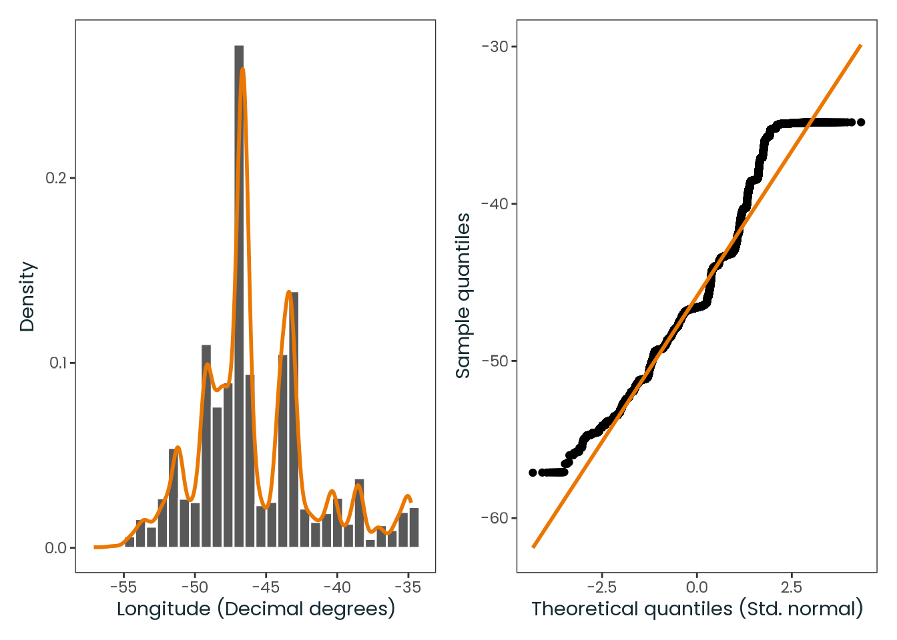
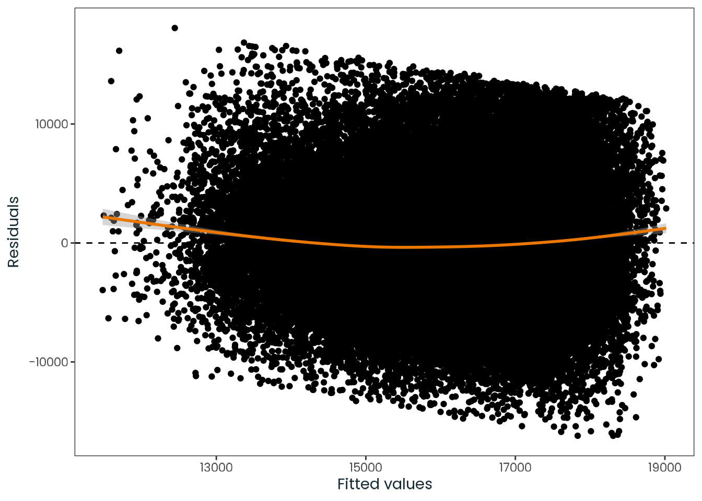
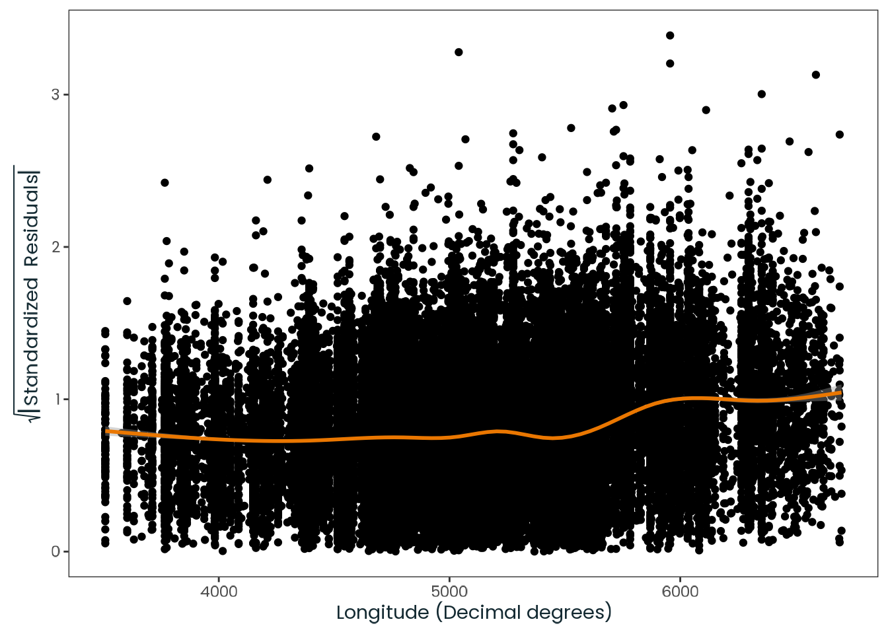
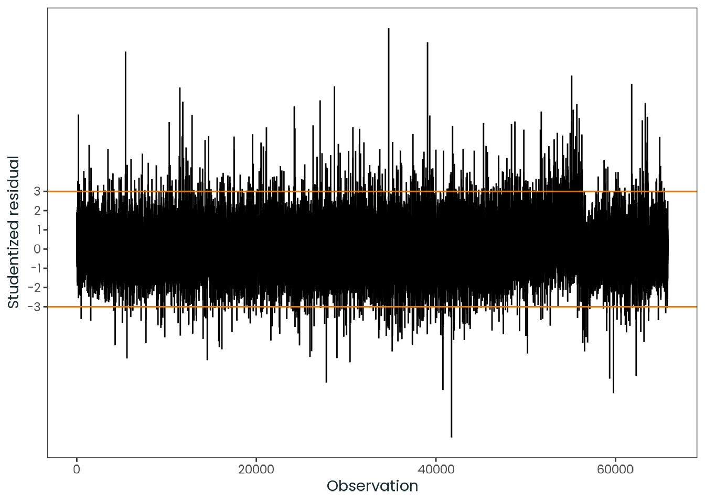
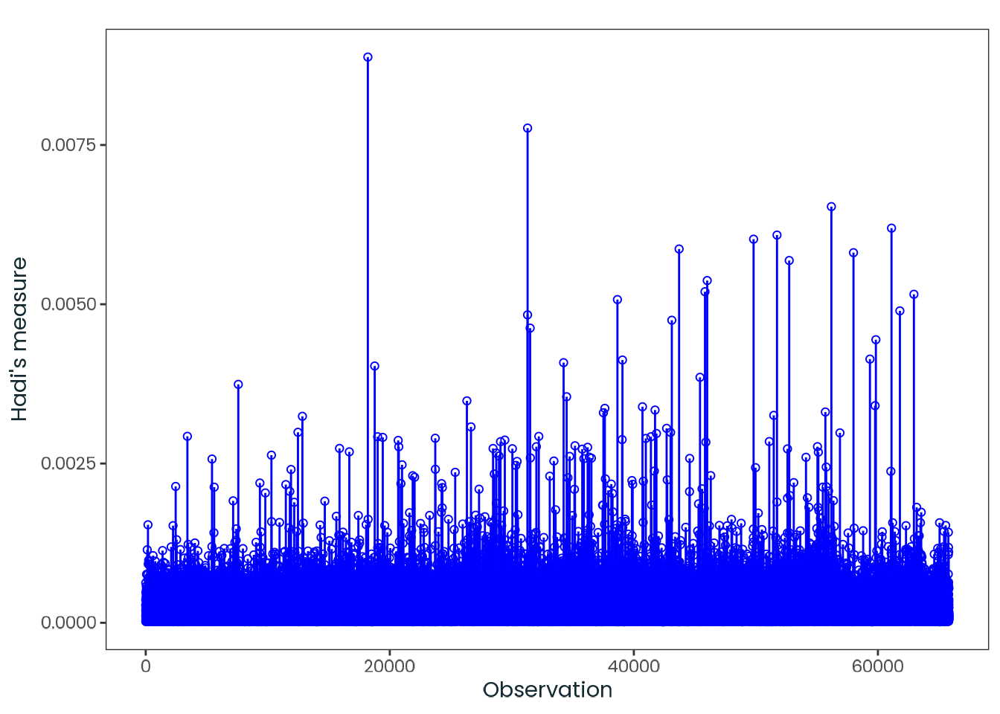

This document focuses on testing the thesis hypothesis (Test B) using the methods described in the supplemental material titled Methods.
The assumptions addressed here are those relevant to general linear models, with further information available in the supplemental material titled Overview of General Linear Models.
Predictor is known. Either the vectors \(z_{1}, \dots , z_{n}\) are known ahead of time, or they are the observed values of random vectors \(Z_{1}, \dots , Z_{n}\) on whose values we condition before computing the joint distribution of (\(Y_{1}, \dots , Y_{n}\)) (DeGroot & Schervish, 2012, p. 736).
Assumption 1 is satisfied, as the predictors are known.
This data processing is performed solely for the purpose of the analysis. The variables undergo numerical transformations to streamline the modeling process and minimize potential errors.
data|>dplyr::select(-cell_weight)|>report::report()#> The data contains 65823 observations of the following 6 variables:#> #> - msf_sc: n = 65823, Mean = 16120.91, SD = 5172.84, Median = 15685.71, MAD =#> 5210.28, range: [1542.86, 30578.57], Skewness = 0.27, Kurtosis = -0.25, 0%#> missing#> - age: n = 65823, Mean = 32.11, SD = 9.26, Median = 30.70, MAD = 9.42,#> range: [18, 58.95], Skewness = 0.66, Kurtosis = -0.19, 0% missing#> - sex: 2 levels, namely Female (n = 43728, 66.43%) and Male (n = 22095,#> 33.57%)#> - latitude: n = 65823, Mean = -20.88, SD = 6.04, Median = -22.90, MAD =#> 2.26, range: [-33.52, 0.33], Skewness = 1.50, Kurtosis = 2.02, 0% missing#> - longitude: n = 65823, Mean = -45.81, SD = 4.05, Median = -46.59, MAD =#> 3.87, range: [-57.11, -34.81], Skewness = 0.65, Kurtosis = 0.47, 0% missing#> - ghi_month: n = 65823, Mean = 5103.14, SD = 545.25, Median = 5050.00, MAD =#> 593.04, range: [3508, 6699], Skewness = 0.03, Kurtosis = -0.04, 0% missing
F.4 Conducting a Power Analysis
The results indicate that at least \(1\,683\) observations per variable are required to achieve a power of \(0.99\) (\(1 - \beta\)) (the probability of not committing a type II error) and a significance level (\(\alpha\)) of \(0.01\) (\(0.99\) probability of not committing a type I error). The dataset contains \(65\,823\) observations, which exceeds this requirement.
pre_pwr<-pwrss::pwrss.f.reg( f2 =0.02, # Minimal Effect Size (MES). k =length(data)-2, # Number of predictors (-msf_sc, -cell_weight). power =0.99, alpha =0.01)#> Linear Regression (F test) #> R-squared Deviation from 0 (zero) #> H0: r2 = 0 #> HA: r2 > 0 #> ------------------------------ #> Statistical power = 0.99 #> n = 1683 #> ------------------------------ #> Numerator degrees of freedom = 5 #> Denominator degrees of freedom = 1676.5 #> Non-centrality parameter = 33.649 #> Type I error rate = 0.01 #> Type II error rate = 0.01
data|>stats_summary( col ='msf_sc', name ='MSF~sc~ (Chronotype proxy) (seconds)', as_list =FALSE)
Table F.1: Statistics for the msf_sc variable.
Code
data|>test_normality( col ='msf_sc', name ='MSF~sc~ (Chronotype proxy) (seconds)')#> Registered S3 method overwritten by 'quantmod':#> method from#> as.zoo.data.frame zoo
Figure F.2: Histogram of the msf_sc variable with a kernel density estimate, along with a quantile-quantile (Q-Q) plot between the variable and the theoretical quantiles of the normal distribution.
Code
data|>plot_box_plot( col ='msf_sc')
Figure F.3: Boxplot of the msf_sc variable.
Code
data|>stats_summary( col ='age', name ='Age (years)', as_list =FALSE)
Table F.2: Statistics for the age variable.
Code
data|>test_normality( col ='age', name ='Age (years)')
Figure F.4: Histogram of the age variable with a kernel density estimate, along with a quantile-quantile (Q-Q) plot between the variable and the theoretical quantiles of the normal distribution.
Code
data|>plot_box_plot( col ='age')
Figure F.5: Boxplot of the age variable.

Code
data|>stats_summary( col ='latitude', name ='Latitude (decimal degrees)', as_list =FALSE)
Table F.3: Statistics for the latitude variable.
Code
data|>test_normality( col ='latitude', name ='Latitude (decimal degrees)')
Figure F.6: Histogram of the latitude variable with a kernel density estimate, along with a quantile-quantile (Q-Q) plot between the variable and the theoretical quantiles of the normal distribution.
Code
data|>plot_box_plot( col ='latitude')
Figure F.7: Boxplot of the latitude variable.
Code
data|>stats_summary( col ='longitude', name ='Longitude (decimal degrees)', as_list =FALSE)
Table F.4: Statistics for the longitude variable.
Code
data|>test_normality( col ='longitude', name ='Longitude (decimal degrees)')
Figure F.8: Histogram of the longitude variable with a kernel density estimate, along with a quantile-quantile (Q-Q) plot between the variable and the theoretical quantiles of the normal distribution.
Code
data|>plot_box_plot( col ='longitude')
Figure F.9: Boxplot of the longitude variable.
Code
data|>stats_summary( col ='ghi_month', name ='Monthly average global horizontal irradiance (Wh/m²)', as_list =FALSE)
Table F.5: Statistics for the ghi_month variable.
Code
data|>test_normality( col ='ghi_month', name ='Monthly average global horizontal irradiance (Wh/m²)')
Figure F.10: Histogram of the ghi_month variable with a kernel density estimate, along with a quantile-quantile (Q-Q) plot between the variable and the theoretical quantiles of the normal distribution.
Table F.6: Output from the model fitting process showing the estimated coefficients, standard errors, test statistics, and p-values for the terms in the linear regression model.
Table F.7: Summary of model fit statistics showing key metrics including R-squared, adjusted R-squared, sigma, statistic, p-value, degrees of freedom, log-likelihood, AIC, BIC, and deviance.
fit_engine<-fit|>parsnip::extract_fit_engine()fit_engine|>summary()#> #> Call:#> stats::lm(formula = ..y ~ ., data = data, weights = weights)#> #> Weighted Residuals:#> Min 1Q Median 3Q Max #> -44246 -2705 -316 2430 52017 #> #> Coefficients:#> Estimate Std. Error t value Pr(>|t|) #> (Intercept) 19427.76 389.03 49.94 <2e-16 ***#> age -124.88 1.73 -72.30 <2e-16 ***#> sexMale 358.49 39.07 9.18 <2e-16 ***#> longitude -71.87 4.87 -14.76 <2e-16 ***#> ghi_month -0.52 0.04 -13.02 <2e-16 ***#> ---#> Signif. codes: 0 '***' 0.001 '**' 0.01 '*' 0.05 '.' 0.1 ' ' 1#> #> Residual standard error: 4540 on 65818 degrees of freedom#> Multiple R-squared: 0.0852, Adjusted R-squared: 0.0851 #> F-statistic: 1.53e+03 on 4 and 65818 DF, p-value: <2e-16
Code
# A jerry-rigged solution to fix issues related to modeling using the pipe.fit_engine_2<-lm(form, data =data, weights =cell_weight)fit_engine_restricted<-fit_engine_2
report::report(fit_engine_2)#> We fitted a linear model (estimated using OLS) to predict msf_sc with age,#> sex, longitude and ghi_month (formula: msf_sc ~ age + sex + longitude +#> ghi_month). The model explains a statistically significant and weak#> proportion of variance (R2 = 0.09, F(4, 65818) = 1531.81, p < .001, adj. R2#> = 0.09). The model's intercept, corresponding to age = 0, sex = Female,#> longitude = 0 and ghi_month = 0, is at 19427.76 (95% CI [18665.26,#> 20190.26], t(65818) = 49.94, p < .001). Within this model:#> #> - The effect of age is statistically significant and negative (beta =#> -124.88, 95% CI [-128.26, -121.49], t(65818) = -72.30, p < .001; Std. beta =#> -0.27, 95% CI [-0.28, -0.26])#> - The effect of sex [Male] is statistically significant and positive (beta =#> 358.49, 95% CI [281.91, 435.07], t(65818) = 9.18, p < .001; Std. beta =#> 0.07, 95% CI [0.05, 0.08])#> - The effect of longitude is statistically significant and negative (beta =#> -71.87, 95% CI [-81.41, -62.33], t(65818) = -14.76, p < .001; Std. beta =#> -0.07, 95% CI [-0.08, -0.06])#> - The effect of ghi month is statistically significant and negative (beta =#> -0.52, 95% CI [-0.60, -0.44], t(65818) = -13.02, p < .001; Std. beta =#> -0.06, 95% CI [-0.07, -0.05])#> #> Standardized parameters were obtained by fitting the model on a standardized#> version of the dataset. 95% Confidence Intervals (CIs) and p-values were#> computed using a Wald t-distribution approximation.
F.7.2 Evaluating the Model Fit
F.7.2.1 Predictions
Code
limits<-stats::predict(fit_engine, interval ="prediction")|>dplyr::as_tibble()|>rutils::shush()fit|>broom::augment(data)|>dplyr::bind_cols(limits)|>ggplot2::ggplot(ggplot2::aes(msf_sc, .pred))+# ggplot2::geom_ribbon(# mapping = ggplot2::aes(ymin = lwr, ymax = upr),# alpha = 0.2# ) +ggplot2::geom_ribbon( mapping =ggplot2::aes( ymin =stats::predict(stats::loess(lwr~msf_sc)), ymax =stats::predict(stats::loess(upr~msf_sc)),), alpha =0.2)+ggplot2::geom_smooth( mapping =ggplot2::aes(y =lwr), se =FALSE, method ="loess", formula =y~x, linetype ="dashed", linewidth =0.2, color ="black")+ggplot2::geom_smooth( mapping =ggplot2::aes(y =upr), se =FALSE, method ="loess", formula =y~x, linetype ="dashed", linewidth =0.2, color ="black")+ggplot2::geom_point()+ggplot2::geom_abline(intercept =0, slope =1, color ="red")+ggplot2::labs( x ="Observed", y ="Predicted")
Figure F.13: Relation between observed and predicted values. The red line is a 45-degree line originating from the plane’s origin and represents a perfect fit. The shaded area depicts a smoothed version of the 95% confidence of the prediction interval.
F.7.2.2 Posterior Predictive Checks
Posterior predictive checks are a Bayesian technique used to assess model fit by comparing observed data to data simulated from the posterior predictive distribution (i.e., the distribution of potential unobserved values given the observed data). These checks help identify systematic discrepancies between the observed and simulated data, providing insight into whether the chosen model (or distributional family) is appropriate. Ideally, the model-predicted lines should closely match the observed data patterns.
Code
diag_sum_plots<-fit_engine_2|>performance::check_model( panel =FALSE, colors =c("red", "black", "black"))|>plot()|>rutils::shush()diag_sum_plots$PP_CHECK+ggplot2::labs( title =ggplot2::element_blank(), subtitle =ggplot2::element_blank(), x ="MSFsc (Chronotype proxy) (s)",)+ggplot2::theme_bw()
Figure F.14: Posterior predictive checks for the model. The red line represents the observed data, while the black lines represent the model-predicted data.
F.7.3 Conducting Model Diagnostics
It’s important to note that objective assumption tests (e.g., Anderson–Darling test) is not advisable for larger samples, since they can be overly sensitive to minor deviations. Additionally, they might overlook visual patterns that are not captured by a single metric (Kozak & Piepho, 2018; Schucany & Ng, 2006; Shatz, 2024).
I included those tests here just for reference. However, for the reason above, all assumptions were diagnosed by visual assessment.
For a straightforward critique of normality tests specifically, refer to this article by Greener (2020).
F.7.3.1 Normality
Assumption 2
Normality. For \(i = 1, \dots, n\), the conditional distribution of \(Y_{i}\) given the vectors \(z_{1}, \dots , z_{n}\) is a normal distribution (DeGroot & Schervish, 2012, p. 737).
Assumption 2 is satisfied, as the residuals shown a fairly normal distribution by visual inspection.
F.7.3.1.1 Visual Inspection
Code
fit_engine|>stats::residuals()|>dplyr::as_tibble()|>test_normality(col ="value", name ="Residuals")
Figure F.15: Histogram of the model residuals with a kernel density estimate, along with a quantile-quantile (Q-Q) plot between the residuals and the theoretical quantiles of the normal distribution.
Figure F.16: Boxplot of model residuals with outliers highlighted in red.
Code
fit_engine|>stats::residuals()|>dplyr::as_tibble()|>stats_summary(col ="value", name ="Residuals")
Table F.8: Summary statistics of model residuals.
F.7.3.1.2 Tests
It’s important to note that the Kolmogorov-Smirnov and Pearson chi-square tests are included here just for reference, as many authors don’t recommend using them when testing for normality (D’Agostino & Belanger, 1990). Learn more about normality tests in Thode (2002).
I also recommend checking the original papers for each test to understand their assumptions and limitations:
Table F.9: Summary of statistical tests conducted to assess the normality of the residuals.
F.7.3.2 Linearity
Assumption 3
Linear mean. There is a vector of parameters \(\beta = (\beta_{0}, \dots, \beta_{p - 1})\) such that the conditional mean of \(Y_{i}\) given the values \(z_{1}, \dots , z_{n}\) has the form
It is important to clarify that the linear assumption pertains to linearity in the parameters or equivalently, linearity in the coefficients. This means that each predictor is multiplied by its corresponding regression coefficient. However, this does not imply that the relationship between the predictors and the response variable is linear. In fact, a linear model can still effectively capture non-linear relationships between predictors and the response variable by utilizing transformations of the predictors (Cohen et al., 2002).
Assumption 3 is satisfied, as the relationship between the variables is fairly linear.
Code
plot<-fit|>broom::augment(data)|>ggplot2::ggplot(ggplot2::aes(.pred, .resid))+ggplot2::geom_point()+ggplot2::geom_hline( yintercept =0, color ="black", linewidth =0.5, linetype ="dashed")+ggplot2::geom_smooth(color ="red")+ggplot2::labs(x ="Fitted values", y ="Residuals")plot|>print()|>rutils::shush()
Figure F.17: Residual plot showing the relationship between fitted values and residuals. The dashed black line represent zero residuals, indicating an ideal model fit. The red line indicate the conditional mean of residuals.
Figure F.18: Residual fit spread plots to detect non-linearity, influential observations, and outliers. The side-by-side plots show the centered fit and residuals, illustrating the variation explained by the model and what remains in the residuals. Inappropriately specified models often exhibit greater spread in the residuals than in the centered fit. “Proportion Less” indicates the cumulative distribution function, representing the proportion of observations below a specific value, facilitating an assessment of model performance.
The Ramsey’s RESET test indicates that the model has no omitted variables. This test examines whether non-linear combinations of the fitted values can explain the response variable.
Learn more about the Ramsey’s RESET test in: Ramsey (1969).
\[
\begin{cases}
\text{H}_{0}: \text{The model has no omitted variables} \\
\text{H}_{a}: \text{The model has omitted variables}
\end{cases}
\]
Common variance (homoscedasticity). There is as parameter \(\sigma^{2}\) such the conditional variance of \(Y_{i}\) given the values \(z_{1}, \dots , z_{n}\) is \(\sigma^{2}\) for \(i = 1, \dots, n\).
Assumption 4 is satisfied. When comparing the standardized residuals (\(\sqrt{|\text{Standardized Residuals}|}\)) spread to the fitted values, we can observe that the residuals are fairly constant across the range of values. This suggests that the residuals have a constant variance.
F.7.3.3.1 Visual Inspection
Code
plot<-fit|>stats::predict(data)|>dplyr::mutate( .sd_resid =fit_engine|>stats::rstandard()|>abs()|>sqrt())|>ggplot2::ggplot(ggplot2::aes(.pred, .sd_resid))+ggplot2::geom_point()+ggplot2::geom_smooth(color ="red")+ggplot2::labs( x ="Fitted values", y =latex2exp::TeX("$\\sqrt{|Standardized \\ Residuals|}$"))plot|>print()|>rutils::shush()
Figure F.19: Relation between the fitted values of the model and its standardized residuals.
Table F.12: Relation between longitude and the model standardized residuals.
Code
plot<-fit|>stats::predict(data)|>dplyr::mutate( .sd_resid =fit|>parsnip::extract_fit_engine()|>stats::rstandard()|>abs()|>sqrt())|>dplyr::bind_cols(data)|>ggplot2::ggplot(ggplot2::aes(ghi_month, .sd_resid))+ggplot2::geom_point()+ggplot2::geom_smooth(color ='red')+ggplot2::labs( x ='Monthly average global horizontal irradiance (Wh/m²)', y =latex2exp::TeX('$\\sqrt{|Standardized \\ Residuals|}$'))plot|>print()|>rutils::shush()
Table F.13: Relation between ghi_month and the model standardized residuals.
F.7.3.3.2 Breusch-Pagan Test
The Breusch-Pagan test test indicates that the residuals exhibit constant variance.
Learn more about the Breusch-Pagan test in: Breusch & Pagan (1979) and Koenker (1981).
\[
\begin{cases}
\text{H}_{0}: \text{The variance is constant} \\
\text{H}_{a}: \text{The variance is not constant}
\end{cases}
\]
# With studentising modification of Koenkerfit_engine|>lmtest::bptest(studentize =TRUE)#> #> studentized Breusch-Pagan test#> #> data: fit_engine#> BP = 1123, df = 4, p-value <2e-16
fit_engine|>car::ncvTest()#> Non-constant Variance Score Test #> Variance formula: ~ fitted.values #> Chisquare = 8204.7, Df = 1, p = <2e-16
fit_engine_2|>olsrr::ols_test_breusch_pagan()#> #> Breusch Pagan Test for Heteroskedasticity#> -----------------------------------------#> Ho: the variance is constant #> Ha: the variance is not constant #> #> Data #> ----------------------------------#> Response : msf_sc #> Variables: fitted values of msf_sc #> #> Test Summary #> -----------------------------#> DF = 1 #> Chi2 = 78.5315 #> Prob > Chi2 = 7.8731e-19
F.7.3.4 Independence
Assumption 5
Independence. The random variables \(Y_{1}, \dots , Y_{n}\) are independent given the observed \(z_{1}, \dots , z_{n}\)(DeGroot & Schervish, 2012, p. 737).
Assumption 5 is satisfied. Although the residuals show some autocorrelation, they fall within the acceptable range of the Durbin–Watson statistic (\(1.5\) to \(2.5\)). It’s also important to note that the observations for each predicted value are not related to any other prediction; in other words, they are not grouped or sequenced by any variable (by design) (see Hair (2019, p. 291) for more information).
Many authors don’t consider autocorrelation tests for linear regression models, as they are more relevant for time series data. They were include here just for reference.
Figure F.20: Time series plot of the residuals along with its AutoCorrelation Function (ACF) and Partial AutoCorrelation Function (PACF).
F.7.3.4.2 Correlations
?tbl-sm-6-restricted-model-residual-diag-independence-1shows the relative importance of independent variables in determining the response variable. It highlights how much each variable uniquely contributes to the R-squared value, beyond what is explained by the other predictors.
Table F.14: Correlations between the dependent variable and the independent variables, along with the zero-order, part, and partial correlations. The zero-order correlation represents the Pearson correlation coefficient between the dependent and independent variables. Part correlations indicate how much the R-squared would decrease if a specific variable were removed from the model, while partial correlations reflect the portion of variance in the response variable that is explained by a specific independent variable, beyond the influence of other predictors in the model.
F.7.3.4.3 Newey-West Estimator
The Newey-West estimator is a method used to estimate the covariance matrix of the coefficients in a regression model when the residuals are autocorrelated.
Learn more about the Newey-West estimator in: Newey & West (1987) and Newey & West (1994).
The Durbin-Watson test is a statistical test used to detect the presence of autocorrelation at lag \(1\) in the residuals from a regression analysis. The test statistic ranges from \(0\) to \(4\), with a value of \(2\) indicating no autocorrelation. Values less than \(2\) indicate positive autocorrelation, while values greater than \(2\) indicate negative autocorrelation (Fox, 2016).
A common rule of thumb in the statistical community is that a Durbin-Watson statistic between \(1.5\) and \(2.5\) suggests little to no autocorrelation.
Learn more about the Durbin-Watson test in: Durbin & Watson (1950); Durbin & Watson (1951); and Durbin & Watson (1971).
\[
\begin{cases}
\text{H}_{0}: \text{Autocorrelation of the disturbances is 0} \\
\text{H}_{a}: \text{Autocorrelation of the disturbances is not equal to 0}
\end{cases}
\]
car::durbinWatsonTest(fit_engine)#> lag Autocorrelation D-W Statistic p-value#> 1 0.036042 1.9279 0#> Alternative hypothesis: rho != 0
F.7.3.4.5 Ljung-Box Test
The Ljung–Box test is a statistical test used to determine whether any autocorrelations within a time series are significantly different from zero. Rather than testing randomness at individual lags, it assesses the “overall” randomness across multiple lags.
No high degree of colinearity was observed among the independent variables.
F.7.3.5.1 Variance Inflation Factor (VIF)
The Variance Inflation Factor (VIF) indicates the effect of other independent variables on the standard error of a regression coefficient. The VIF is directly related to the tolerance value (\(\text{VIF}_{i} = 1/\text{TO}L\)). High VIF values (larger than ~5 (Struck, 2024)) suggest significant collinearity or multicollinearity among the independent variables (Hair, 2019, p. 265).
Figure F.21: Variance Inflation Factors (VIF) for each predictor variable. VIFs below 5 are considered acceptable. Between 5 and 10, the variable should be examined. Above 10, the variable must considered highly collinear.
Table F.16: Variance Inflation Factors (VIF) and tolerance values for each predictor variable.
F.7.3.5.2 Condition Index
The condition index is a measure of multicollinearity in a regression model. It is based on the eigenvalues of the correlation matrix of the predictors. A condition index of 30 or higher is generally considered indicative of significant collinearity (Belsley et al., 2004, pp. 112–114).
Table F.17: Condition indexes and eigenvalues for each predictor variable.
F.7.3.6 Measures of Influence
In this section, I check several measures of influence that can be used to assess the impact of individual observations on the model estimates.
Leverage points
Leverage is a measure of the distance between individual values of a predictor and other values of the predictor. In other words, a point with high leverage has an x-value far away from the other x-values. Points with high leverage have the potential to influence the model estimates (Hair, 2019, p. 262; Nahhas, 2024; Struck, 2024).
Influence points
Influence is a measure of how much an observation affects the model estimates. If an observation with large influence were removed from the dataset, we would expect a large change in the predictive equation (Nahhas, 2024; Struck, 2024).
F.7.3.6.1 Standardized Residuals
Standardized residuals are a rescaling of the residual to a common basis by dividing each residual by the standard deviation of the residuals (Hair, 2019, p. 264).
dplyr::tibble( x =seq_len(nrow(data)), std =stats::rstandard(fit_engine))|>ggplot2::ggplot(ggplot2::aes(x =x, y =std, ymin =0, ymax =std))+ggplot2::geom_linerange(color ="black")+ggplot2::geom_hline(yintercept =2, color ="blue")+ggplot2::geom_hline(yintercept =-2, color ="blue")+ggplot2::geom_hline(yintercept =3, color ="red")+ggplot2::geom_hline(yintercept =-3, color ="red")+ggplot2::scale_y_continuous(breaks =seq(-3, 3))+ggplot2::labs( x ="Observation", y ="Standardized residual")
Figure F.22: Standardized residuals for each observation.
F.7.3.6.2 Studentized Residuals
Studentized residuals are a commonly used variant of the standardized residual. It differs from other methods in how it calculates the standard deviation used in standardization. To minimize the effect of any observation on the standardization process, the standard deviation of the residual for observation \(i\) is computed from regression estimates omitting the \(i\)th observation in the calculation of the regression estimates (Hair, 2019, p. 264).
dplyr::tibble( x =seq_len(nrow(data)), std =stats::rstudent(fit_engine))|>ggplot2::ggplot(ggplot2::aes(x =x, y =std, ymin =0, ymax =std))+ggplot2::geom_linerange(color ="black")+ggplot2::geom_hline(yintercept =2, color ="blue")+ggplot2::geom_hline(yintercept =-2, color ="blue")+ggplot2::geom_hline(yintercept =3, color ="red")+ggplot2::geom_hline(yintercept =-3, color ="red")+ggplot2::scale_y_continuous(breaks =seq(-3, 3))+ggplot2::labs( x ="Observation", y ="Studentized residual")
Figure F.23: Studentized residuals for each observation.
Code
fit|>broom::augment(data)|>dplyr::mutate( std =stats::rstudent(fit_engine))|>ggplot2::ggplot(ggplot2::aes(.pred, std))+ggplot2::geom_point(color ="black")+ggplot2::geom_hline(yintercept =2, color ="blue")+ggplot2::geom_hline(yintercept =-2, color ="blue")+ggplot2::geom_hline(yintercept =3, color ="red")+ggplot2::geom_hline(yintercept =-3, color ="red")+ggplot2::scale_y_continuous(breaks =seq(-3, 3))+ggplot2::labs( x ="Predicted value", y ="Studentized residual")
Figure F.24: Relation between studentized residuals and fitted values.
Code
plot<-fit_engine|>olsrr::ols_plot_resid_lev(threshold =2, print_plot =FALSE)plot$plot+ggplot2::labs( title =ggplot2::element_blank(), y ="Studentized residual")
Figure F.25: Relation between studentized residuals and their leverage points.
F.7.3.6.3 Hat Values
The hat value indicates how distinct an observation’s predictor values are from those of other observations. Observations with high hat values have high leverage and may be, though not necessarily, influential. There is no fixed threshold for what constitutes a “large” hat value; instead, the focus must be on observations with hat values significantly higher than the rest (Hair, 2019, p. 261; Nahhas, 2024).
dplyr::tibble( x =seq_len(nrow(data)), hat =stats::hatvalues(fit_engine))|>ggplot2::ggplot(ggplot2::aes(x =x, y =hat, ymin =0, ymax =hat))+ggplot2::geom_linerange(color ="black")+ggplot2::labs( x ="Observation", y ="Hat value")
Figure F.26: Hat values for each observation.
F.7.3.6.4 Cook’s Distance
The Cook’s D measures each observation’s influence on the model’s fitted values. It is considered one of the most representative metrics for assessing overall influence (Hair, 2019).
A common practice is to flag observations with a Cook’s distance of 1.0 or greater. However, a threshold of \(4 / (n - k - 1)\), where \(n\) is the sample size and \(k\) is the number of independent variables, is suggested as a more conservative measure in small samples or for use with larger datasets (Hair, 2019).
Learn more about Cook’s D in: Cook (1977); Cook (1979).
plot<-fit_engine|>olsrr::ols_plot_cooksd_bar(type =2, print_plot =FALSE)# The following procedure changes the plot aesthetics.q<-plot$plot+ggplot2::labs(title =ggplot2::element_blank())q<-q|>ggplot2::ggplot_build()q$data[[5]]$label<-""q|>ggplot2::ggplot_gtable()|>ggplotify::as.ggplot()
Figure F.27: Cook’s distance for each observation along with a threshold line at \(4 / (n - k - 1)\).
Code
diag_sum_plots<-fit_engine_2|>performance::check_model( panel =FALSE, colors =c("blue", "black", "black"))|>plot()|>rutils::shush()plot<-diag_sum_plots$OUTLIERS+ggplot2::labs( title =ggplot2::element_blank(), subtitle =ggplot2::element_blank(), x ="Leverage", y ="Studentized residuals")+ggplot2::theme( legend.position ="right", axis.title =ggplot2::element_text(size =11, colour ="black"), axis.text =ggplot2::element_text(colour ="gray25"), axis.text.y =ggplot2::element_text(size =9))+ggplot2::theme_bw()plot<-plot|>ggplot2::ggplot_build()# The following procedure changes the plot aesthetics.for(iinc(1:9)){# "#1b6ca8" "#3aaf85"plot$data[[i]]$colour<-dplyr::case_when(plot$data[[i]]$colour=="blue"~ifelse(i==4, "red", "blue"),plot$data[[i]]$colour=="#1b6ca8"~"black",plot$data[[i]]$colour=="darkgray"~"black",TRUE~plot$data[[i]]$colour)}plot|>ggplot2::ggplot_gtable()|>ggplotify::as.ggplot()
Figure F.28: Relation between studentized residuals and their leverage points. The blue line represents the Cook’s distance. Any points outside the contour lines are influential observations.
F.7.3.6.5 Influence on Prediction (DFFITS)
DFFITS (difference in fits) is a standardized measure of how much the prediction for a given observation would change if it were deleted from the model. Each observation’s DFFITS is standardized by the standard deviation of fit at that point (Struck, 2024).
The best rule of thumb is to classify as influential any standardized values that exceed \(2 \sqrt{(p / n)}\), where \(p\) is the number of independent variables + 1 and \(n\) is the sample size (Hair, 2019, p. 261).
Learn more about DDFITS in: Welsch & Kuh (1977) and Belsley et al. (2004).
Figure F.29: Standardized DFFITS (difference in fits) for each observation.
F.7.3.6.6 Influence on Parameter Estimates (DFBETAS)
DFBETAS are a measure of the change in a regression coefficient when an observation is omitted from the regression analysis. The value of the DFBETA is in terms of the coefficient itself(Hair, 2019, p. 261). A cutoff for what is considered a large DFBETAS value is \(2 / \sqrt{n}\), where \(n\) is the number of observations. (Struck, 2024).
Learn more about DFBETAS in: Welsch & Kuh (1977) and Belsley et al. (2004).
Table F.23: Output from the model fitting process showing the estimated coefficients, standard errors, test statistics, and p-values for the terms in the linear regression model.
Table F.24: Summary of model fit statistics showing key metrics including R-squared, adjusted R-squared, sigma, statistic, p-value, degrees of freedom, log-likelihood, AIC, BIC, and deviance.
fit_engine<-fit|>parsnip::extract_fit_engine()fit_engine|>summary()#> #> Call:#> stats::lm(formula = ..y ~ ., data = data, weights = weights)#> #> Weighted Residuals:#> Min 1Q Median 3Q Max #> -44380 -2728 -340 2408 52050 #> #> Coefficients:#> Estimate Std. Error t value Pr(>|t|) #> (Intercept) 18515.5920 416.5989 44.44 < 2e-16 ***#> age -125.2677 1.7278 -72.50 < 2e-16 ***#> sexMale 359.1763 39.0609 9.20 < 2e-16 ***#> longitude -63.3197 5.0644 -12.50 < 2e-16 ***#> ghi_month -0.3452 0.0492 -7.02 0.0000000000022 ***#> latitude -21.7329 3.5573 -6.11 0.0000000010056 ***#> ---#> Signif. codes: 0 '***' 0.001 '**' 0.01 '*' 0.05 '.' 0.1 ' ' 1#> #> Residual standard error: 4540 on 65817 degrees of freedom#> Multiple R-squared: 0.0857, Adjusted R-squared: 0.0856 #> F-statistic: 1.23e+03 on 5 and 65817 DF, p-value: <2e-16
Code
# A jerry-rigged solution to fix issues related to modeling using the pipe.fit_engine_2<-lm(form, data =data, weights =cell_weight)fit_engine_full<-fit_engine_2
report::report(fit_engine_2)#> We fitted a linear model (estimated using OLS) to predict msf_sc with age,#> sex, longitude, ghi_month and latitude (formula: msf_sc ~ age + sex +#> longitude + ghi_month + latitude). The model explains a statistically#> significant and weak proportion of variance (R2 = 0.09, F(5, 65817) =#> 1233.59, p < .001, adj. R2 = 0.09). The model's intercept, corresponding to#> age = 0, sex = Female, longitude = 0, ghi_month = 0 and latitude = 0, is at#> 18515.59 (95% CI [17699.06, 19332.13], t(65817) = 44.44, p < .001). Within#> this model:#> #> - The effect of age is statistically significant and negative (beta =#> -125.27, 95% CI [-128.65, -121.88], t(65817) = -72.50, p < .001; Std. beta =#> -0.27, 95% CI [-0.28, -0.26])#> - The effect of sex [Male] is statistically significant and positive (beta =#> 359.18, 95% CI [282.62, 435.74], t(65817) = 9.20, p < .001; Std. beta =#> 0.07, 95% CI [0.05, 0.08])#> - The effect of longitude is statistically significant and negative (beta =#> -63.32, 95% CI [-73.25, -53.39], t(65817) = -12.50, p < .001; Std. beta =#> -0.06, 95% CI [-0.07, -0.05])#> - The effect of ghi month is statistically significant and negative (beta =#> -0.35, 95% CI [-0.44, -0.25], t(65817) = -7.02, p < .001; Std. beta = -0.04,#> 95% CI [-0.05, -0.03])#> - The effect of latitude is statistically significant and negative (beta =#> -21.73, 95% CI [-28.71, -14.76], t(65817) = -6.11, p < .001; Std. beta =#> -0.03, 95% CI [-0.05, -0.02])#> #> Standardized parameters were obtained by fitting the model on a standardized#> version of the dataset. 95% Confidence Intervals (CIs) and p-values were#> computed using a Wald t-distribution approximation.
F.8.2 Evaluating the Model Fit
F.8.2.1 Predictions
Code
limits<-stats::predict(fit_engine, interval ="prediction")|>dplyr::as_tibble()|>rutils::shush()fit|>broom::augment(data)|>dplyr::bind_cols(limits)|>ggplot2::ggplot(ggplot2::aes(msf_sc, .pred))+# ggplot2::geom_ribbon(# mapping = ggplot2::aes(ymin = lwr, ymax = upr),# alpha = 0.2# ) +ggplot2::geom_ribbon( mapping =ggplot2::aes( ymin =stats::predict(stats::loess(lwr~msf_sc)), ymax =stats::predict(stats::loess(upr~msf_sc)),), alpha =0.2)+ggplot2::geom_smooth( mapping =ggplot2::aes(y =lwr), se =FALSE, method ="loess", formula =y~x, linetype ="dashed", linewidth =0.2, color ="black")+ggplot2::geom_smooth( mapping =ggplot2::aes(y =upr), se =FALSE, method ="loess", formula =y~x, linetype ="dashed", linewidth =0.2, color ="black")+ggplot2::geom_point()+ggplot2::geom_abline(intercept =0, slope =1, color ="red")+ggplot2::labs( x ="Observed", y ="Predicted")
Figure F.32: Relation between observed and predicted values. The red line is a 45-degree line originating from the plane’s origin and represents a perfect fit. The shaded area depicts a smoothed version of the 95% confidence of the prediction interval.
F.8.2.2 Posterior Predictive Checks
Posterior predictive checks are a Bayesian technique used to assess model fit by comparing observed data to data simulated from the posterior predictive distribution (i.e., the distribution of potential unobserved values given the observed data). These checks help identify systematic discrepancies between the observed and simulated data, providing insight into whether the chosen model (or distributional family) is appropriate. Ideally, the model-predicted lines should closely match the observed data patterns.
Code
diag_sum_plots<-fit_engine_2|>performance::check_model( panel =FALSE, colors =c("red", "black", "black"))|>plot()|>rutils::shush()diag_sum_plots$PP_CHECK+ggplot2::labs( title =ggplot2::element_blank(), subtitle =ggplot2::element_blank(), x ="MSFsc (Chronotype proxy) (s)",)+ggplot2::theme_bw()
Figure F.33: Posterior predictive checks for the model. The red line represents the observed data, while the black lines represent the model-predicted data.
F.8.3 Conducting Model Diagnostics
It’s important to note that objective assumption tests (e.g., Anderson–Darling test) is not advisable for larger samples, since they can be overly sensitive to minor deviations. Additionally, they might overlook visual patterns that are not captured by a single metric (Kozak & Piepho, 2018; Schucany & Ng, 2006; Shatz, 2024).
I included those tests here just for reference. However, for the reason above, all assumptions were diagnosed by visual assessment.
For a straightforward critique of normality tests specifically, refer to this article by Greener (2020).
F.8.3.1 Normality
Assumption 2
Normality. For \(i = 1, \dots, n\), the conditional distribution of \(Y_{i}\) given the vectors \(z_{1}, \dots , z_{n}\) is a normal distribution (DeGroot & Schervish, 2012, p. 737).
Assumption 2 is satisfied, as the residuals shown a fairly normal distribution by visual inspection.
F.8.3.1.1 Visual Inspection
Code
fit_engine|>stats::residuals()|>dplyr::as_tibble()|>test_normality(col ="value", name ="Residuals")
Figure F.34: Histogram of the model residuals with a kernel density estimate, along with a quantile-quantile (Q-Q) plot between the residuals and the theoretical quantiles of the normal distribution.
Figure F.35: Boxplot of model residuals with outliers highlighted in red.
Code
fit_engine|>stats::residuals()|>dplyr::as_tibble()|>stats_summary(col ="value", name ="Residuals")
Table F.25: Summary statistics of model residuals.
F.8.3.1.2 Tests
It’s important to note that the Kolmogorov-Smirnov and Pearson chi-square tests are included here just for reference, as many authors don’t recommend using them when testing for normality (D’Agostino & Belanger, 1990). Learn more about normality tests in Thode (2002).
I also recommend checking the original papers for each test to understand their assumptions and limitations:
Table F.26: Summary of statistical tests conducted to assess the normality of the residuals.
F.8.3.2 Linearity
Assumption 3
Linear mean. There is a vector of parameters \(\beta = (\beta_{0}, \dots, \beta_{p - 1})\) such that the conditional mean of \(Y_{i}\) given the values \(z_{1}, \dots , z_{n}\) has the form
It is important to clarify that the linear assumption pertains to linearity in the parameters or equivalently, linearity in the coefficients. This means that each predictor is multiplied by its corresponding regression coefficient. However, this does not imply that the relationship between the predictors and the response variable is linear. In fact, a linear model can still effectively capture non-linear relationships between predictors and the response variable by utilizing transformations of the predictors (Cohen et al., 2002).
Assumption 3 is satisfied, as the relationship between the variables is fairly linear.
Code
plot<-fit|>broom::augment(data)|>ggplot2::ggplot(ggplot2::aes(.pred, .resid))+ggplot2::geom_point()+ggplot2::geom_hline( yintercept =0, color ="black", linewidth =0.5, linetype ="dashed")+ggplot2::geom_smooth(color ="red")+ggplot2::labs(x ="Fitted values", y ="Residuals")plot|>print()|>rutils::shush()
Figure F.36: Residual plot showing the relationship between fitted values and residuals. The dashed black line represent zero residuals, indicating an ideal model fit. The red line indicate the conditional mean of residuals.
Figure F.37: Residual fit spread plots to detect non-linearity, influential observations, and outliers. The side-by-side plots show the centered fit and residuals, illustrating the variation explained by the model and what remains in the residuals. Inappropriately specified models often exhibit greater spread in the residuals than in the centered fit. “Proportion Less” indicates the cumulative distribution function, representing the proportion of observations below a specific value, facilitating an assessment of model performance.

The Ramsey’s RESET test indicates that the model has no omitted variables. This test examines whether non-linear combinations of the fitted values can explain the response variable.
Learn more about the Ramsey’s RESET test in: Ramsey (1969).
\[
\begin{cases}
\text{H}_{0}: \text{The model has no omitted variables} \\
\text{H}_{a}: \text{The model has omitted variables}
\end{cases}
\]
Common variance (homoscedasticity). There is as parameter \(\sigma^{2}\) such the conditional variance of \(Y_{i}\) given the values \(z_{1}, \dots , z_{n}\) is \(\sigma^{2}\) for \(i = 1, \dots, n\).
Assumption 4 is satisfied. When comparing the standardized residuals (\(\sqrt{|\text{Standardized Residuals}|}\)) spread to the fitted values, we can observe that the residuals are fairly constant across the range of values. This suggests that the residuals have a constant variance.
F.8.3.3.1 Visual Inspection
Code
plot<-fit|>stats::predict(data)|>dplyr::mutate( .sd_resid =fit_engine|>stats::rstandard()|>abs()|>sqrt())|>ggplot2::ggplot(ggplot2::aes(.pred, .sd_resid))+ggplot2::geom_point()+ggplot2::geom_smooth(color ="red")+ggplot2::labs( x ="Fitted values", y =latex2exp::TeX("$\\sqrt{|Standardized \\ Residuals|}$"))plot|>print()|>rutils::shush()
Figure F.38: Relation between the fitted values of the model and its standardized residuals.
Table F.30: Relation between ghi_month and the model standardized residuals.
Code
plot<-fit|>stats::predict(data)|>dplyr::mutate( .sd_resid =fit|>parsnip::extract_fit_engine()|>stats::rstandard()|>abs()|>sqrt())|>dplyr::bind_cols(data)|>ggplot2::ggplot(ggplot2::aes(latitude, .sd_resid))+ggplot2::geom_point()+ggplot2::geom_smooth(color ='red')+ggplot2::labs( x ='Monthly average global horizontal irradiance (Wh/m²)', y =latex2exp::TeX('$\\sqrt{|Standardized \\ Residuals|}$'))plot|>print()|>rutils::shush()
Table F.31: Relation between latitude and the model standardized residuals.

F.8.3.3.2 Breusch-Pagan Test
The Breusch-Pagan test test indicates that the residuals exhibit constant variance.
Learn more about the Breusch-Pagan test in: Breusch & Pagan (1979) and Koenker (1981).
\[
\begin{cases}
\text{H}_{0}: \text{The variance is constant} \\
\text{H}_{a}: \text{The variance is not constant}
\end{cases}
\]
# With studentising modification of Koenkerfit_engine|>lmtest::bptest(studentize =TRUE)#> #> studentized Breusch-Pagan test#> #> data: fit_engine#> BP = 1132, df = 5, p-value <2e-16
fit_engine|>car::ncvTest()#> Non-constant Variance Score Test #> Variance formula: ~ fitted.values #> Chisquare = 9083.7, Df = 1, p = <2e-16
fit_engine_2|>olsrr::ols_test_breusch_pagan()#> #> Breusch Pagan Test for Heteroskedasticity#> -----------------------------------------#> Ho: the variance is constant #> Ha: the variance is not constant #> #> Data #> ----------------------------------#> Response : msf_sc #> Variables: fitted values of msf_sc #> #> Test Summary #> -----------------------------#> DF = 1 #> Chi2 = 72.1718 #> Prob > Chi2 = 1.9726e-17
F.8.3.4 Independence
Assumption 5
Independence. The random variables \(Y_{1}, \dots , Y_{n}\) are independent given the observed \(z_{1}, \dots , z_{n}\)(DeGroot & Schervish, 2012, p. 737).
Assumption 5 is satisfied. Although the residuals show some autocorrelation, they fall within the acceptable range of the Durbin–Watson statistic (\(1.5\) to \(2.5\)). It’s also important to note that the observations for each predicted value are not related to any other prediction; in other words, they are not grouped or sequenced by any variable (by design) (see Hair (2019, p. 291) for more information).
Many authors don’t consider autocorrelation tests for linear regression models, as they are more relevant for time series data. However, I include them here just for reference.
Figure F.39: Time series plot of the residuals along with its AutoCorrelation Function (ACF) and Partial AutoCorrelation Function (PACF).
F.8.3.4.2 Correlations
Table F.32 shows the relative importance of independent variables in determining the response variable. It highlights how much each variable uniquely contributes to the R-squared value, beyond what is explained by the other predictors.
Table F.32: Correlations between the dependent variable and the independent variables, along with the zero-order, part, and partial correlations. The zero-order correlation represents the Pearson correlation coefficient between the dependent and independent variables. Part correlations indicate how much the R-squared would decrease if a specific variable were removed from the model, while partial correlations reflect the portion of variance in the response variable that is explained by a specific independent variable, beyond the influence of other predictors in the model.
F.8.3.4.3 Newey-West Estimator
The Newey-West estimator is a method used to estimate the covariance matrix of the coefficients in a regression model when the residuals are autocorrelated.
Learn more about the Newey-West estimator in: Newey & West (1987) and Newey & West (1994).
The Durbin-Watson test is a statistical test used to detect the presence of autocorrelation at lag \(1\) in the residuals from a regression analysis. The test statistic ranges from \(0\) to \(4\), with a value of \(2\) indicating no autocorrelation. Values less than \(2\) indicate positive autocorrelation, while values greater than \(2\) indicate negative autocorrelation (Fox, 2016).
A common rule of thumb in the statistical community is that a Durbin-Watson statistic between \(1.5\) and \(2.5\) suggests little to no autocorrelation.
Learn more about the Durbin-Watson test in: Durbin & Watson (1950); Durbin & Watson (1951); and Durbin & Watson (1971).
\[
\begin{cases}
\text{H}_{0}: \text{Autocorrelation of the disturbances is 0} \\
\text{H}_{a}: \text{Autocorrelation of the disturbances is not equal to 0}
\end{cases}
\]
car::durbinWatsonTest(fit_engine)#> lag Autocorrelation D-W Statistic p-value#> 1 0.036474 1.927 0#> Alternative hypothesis: rho != 0
F.8.3.4.5 Ljung-Box Test
The Ljung–Box test is a statistical test used to determine whether any autocorrelations within a time series are significantly different from zero. Rather than testing randomness at individual lags, it assesses the “overall” randomness across multiple lags.
No high degree of colinearity was observed among the independent variables.
F.8.3.5.1 Variance Inflation Factor (VIF)
The Variance Inflation Factor (VIF) indicates the effect of other independent variables on the standard error of a regression coefficient. The VIF is directly related to the tolerance value (\(\text{VIF}_{i} = 1/\text{TO}L\)). High VIF values (larger than ~5 (Struck, 2024)) suggest significant collinearity or multicollinearity among the independent variables (Hair, 2019, p. 265).
Figure F.40: Variance Inflation Factors (VIF) for each predictor variable. VIFs below 5 are considered acceptable. Between 5 and 10, the variable should be examined. Above 10, the variable must considered highly collinear.
Table F.34: Variance Inflation Factors (VIF) and tolerance values for each predictor variable.
F.8.3.5.2 Condition Index
The condition index is a measure of multicollinearity in a regression model. It is based on the eigenvalues of the correlation matrix of the predictors. A condition index of 30 or higher is generally considered indicative of significant collinearity (Belsley et al., 2004, pp. 112–114).
Table F.35: Condition indexes and eigenvalues for each predictor variable.
F.8.3.6 Measures of Influence
In this section, I check several measures of influence that can be used to assess the impact of individual observations on the model estimates.
Leverage points
Leverage is a measure of the distance between individual values of a predictor and other values of the predictor. In other words, a point with high leverage has an x-value far away from the other x-values. Points with high leverage have the potential to influence the model estimates (Hair, 2019, p. 262; Nahhas, 2024; Struck, 2024).
Influence points
Influence is a measure of how much an observation affects the model estimates. If an observation with large influence were removed from the dataset, we would expect a large change in the predictive equation (Nahhas, 2024; Struck, 2024).
F.8.3.6.1 Standardized Residuals
Standardized residuals are a rescaling of the residual to a common basis by dividing each residual by the standard deviation of the residuals (Hair, 2019, p. 264).
dplyr::tibble( x =seq_len(nrow(data)), std =stats::rstandard(fit_engine))|>ggplot2::ggplot(ggplot2::aes(x =x, y =std, ymin =0, ymax =std))+ggplot2::geom_linerange(color ="black")+ggplot2::geom_hline(yintercept =2, color ="blue")+ggplot2::geom_hline(yintercept =-2, color ="blue")+ggplot2::geom_hline(yintercept =3, color ="red")+ggplot2::geom_hline(yintercept =-3, color ="red")+ggplot2::scale_y_continuous(breaks =seq(-3, 3))+ggplot2::labs( x ="Observation", y ="Standardized residual")
Figure F.41: Standardized residuals for each observation.
F.8.3.6.2 Studentized Residuals
Studentized residuals are a commonly used variant of the standardized residual. It differs from other methods in how it calculates the standard deviation used in standardization. To minimize the effect of any observation on the standardization process, the standard deviation of the residual for observation \(i\) is computed from regression estimates omitting the \(i\)th observation in the calculation of the regression estimates (Hair, 2019, p. 264).
dplyr::tibble( x =seq_len(nrow(data)), std =stats::rstudent(fit_engine))|>ggplot2::ggplot(ggplot2::aes(x =x, y =std, ymin =0, ymax =std))+ggplot2::geom_linerange(color ="black")+ggplot2::geom_hline(yintercept =2, color ="blue")+ggplot2::geom_hline(yintercept =-2, color ="blue")+ggplot2::geom_hline(yintercept =3, color ="red")+ggplot2::geom_hline(yintercept =-3, color ="red")+ggplot2::scale_y_continuous(breaks =seq(-3, 3))+ggplot2::labs( x ="Observation", y ="Studentized residual")
Figure F.42: Studentized residuals for each observation.
Code
fit|>broom::augment(data)|>dplyr::mutate( std =stats::rstudent(fit_engine))|>ggplot2::ggplot(ggplot2::aes(.pred, std))+ggplot2::geom_point(color ="black")+ggplot2::geom_hline(yintercept =2, color ="blue")+ggplot2::geom_hline(yintercept =-2, color ="blue")+ggplot2::geom_hline(yintercept =3, color ="red")+ggplot2::geom_hline(yintercept =-3, color ="red")+ggplot2::scale_y_continuous(breaks =seq(-3, 3))+ggplot2::labs( x ="Predicted value", y ="Studentized residual")
Figure F.43: Relation between studentized residuals and fitted values.

Code
plot<-fit_engine|>olsrr::ols_plot_resid_lev(threshold =2, print_plot =FALSE)plot$plot+ggplot2::labs( title =ggplot2::element_blank(), y ="Studentized residual")
Figure F.44: Relation between studentized residuals and their leverage points.
F.8.3.6.3 Hat Values
The hat value indicates how distinct an observation’s predictor values are from those of other observations. Observations with high hat values have high leverage and may be, though not necessarily, influential. There is no fixed threshold for what constitutes a “large” hat value; instead, the focus must be on observations with hat values significantly higher than the rest (Hair, 2019, p. 261; Nahhas, 2024).
dplyr::tibble( x =seq_len(nrow(data)), hat =stats::hatvalues(fit_engine))|>ggplot2::ggplot(ggplot2::aes(x =x, y =hat, ymin =0, ymax =hat))+ggplot2::geom_linerange(color ="black")+ggplot2::labs( x ="Observation", y ="Hat value")
Figure F.45: Hat values for each observation.
F.8.3.6.4 Cook’s Distance
The Cook’s D measures each observation’s influence on the model’s fitted values. It is considered one of the most representative metrics for assessing overall influence (Hair, 2019).
A common practice is to flag observations with a Cook’s distance of 1.0 or greater. However, a threshold of \(4 / (n - k - 1)\), where \(n\) is the sample size and \(k\) is the number of independent variables, is suggested as a more conservative measure in small samples or for use with larger datasets (Hair, 2019).
Learn more about Cook’s D in: Cook (1977); Cook (1979).
plot<-fit_engine|>olsrr::ols_plot_cooksd_bar(type =2, print_plot =FALSE)# The following procedure changes the plot aesthetics.q<-plot$plot+ggplot2::labs(title =ggplot2::element_blank())q<-q|>ggplot2::ggplot_build()q$data[[5]]$label<-""q|>ggplot2::ggplot_gtable()|>ggplotify::as.ggplot()
Figure F.46: Cook’s distance for each observation along with a threshold line at \(4 / (n - k - 1)\).
Code
diag_sum_plots<-fit_engine_2|>performance::check_model( panel =FALSE, colors =c("blue", "black", "black"))|>plot()|>rutils::shush()plot<-diag_sum_plots$OUTLIERS+ggplot2::labs( title =ggplot2::element_blank(), subtitle =ggplot2::element_blank(), x ="Leverage", y ="Studentized residuals")+ggplot2::theme( legend.position ="right", axis.title =ggplot2::element_text(size =11, colour ="black"), axis.text =ggplot2::element_text(colour ="gray25"), axis.text.y =ggplot2::element_text(size =9))+ggplot2::theme_bw()plot<-plot|>ggplot2::ggplot_build()# The following procedure changes the plot aesthetics.for(iinc(1:9)){# "#1b6ca8" "#3aaf85"plot$data[[i]]$colour<-dplyr::case_when(plot$data[[i]]$colour=="blue"~ifelse(i==4, "red", "blue"),plot$data[[i]]$colour=="#1b6ca8"~"black",plot$data[[i]]$colour=="darkgray"~"black",TRUE~plot$data[[i]]$colour)}plot|>ggplot2::ggplot_gtable()|>ggplotify::as.ggplot()
Figure F.47: Relation between studentized residuals and their leverage points. The blue line represents the Cook’s distance. Any points outside the contour lines are influential observations.
F.8.3.6.5 Influence on Prediction (DFFITS)
DFFITS (difference in fits) is a standardized measure of how much the prediction for a given observation would change if it were deleted from the model. Each observation’s DFFITS is standardized by the standard deviation of fit at that point (Struck, 2024).
The best rule of thumb is to classify as influential any standardized values that exceed \(2 \sqrt{(p / n)}\), where \(p\) is the number of independent variables + 1 and \(n\) is the sample size (Hair, 2019, p. 261).
Learn more about DDFITS in: Welsch & Kuh (1977) and Belsley et al. (2004).
Figure F.48: Standardized DFFITS (difference in fits) for each observation.
F.8.3.6.6 Influence on Parameter Estimates (DFBETAS)
DFBETAS are a measure of the change in a regression coefficient when an observation is omitted from the regression analysis. The value of the DFBETA is in terms of the coefficient itself(Hair, 2019, p. 261). A cutoff for what is considered a large DFBETAS value is \(2 / \sqrt{n}\), where \(n\) is the number of observations. (Struck, 2024).
Learn more about DFBETAS in: Welsch & Kuh (1977) and Belsley et al. (2004).
Figure F.50: Potential-residual plot classifying unusual observations as high-leverage points, outliers, or a combination of both.

F.9 Hypothesis Testing
Following the criteria outlined in the methodology supplementary material, we now address the hypothesis for this test:
Hypothesis
Latitude is associated with chronotype distributions, with populations closer to the equator exhibiting, on average, a shorter or more morning-oriented circadian phenotype compared to those residing near the poles.
The results indicate that the F-test is significant (\(\alpha < 0.05\)), meaning that the model including the latitude variable differs from the model without it.
The results show that the \(\Delta \ \text{Adjusted} \ \text{R}^{2}\) value is below the Minimal Effect Size (MES) threshold (\(\text{R}^{2} \approx 0.01960784\)), indicating that adding latitude does not meaningfully improve the model’s fit.
adj_r_squared_restricted<-psychometric::CI.Rsq( rsq =adj_r_squared(fit_engine_restricted), n =nrow(data), k =length(fit_engine_restricted$coefficients)-1, level =0.95)adj_r_squared_restricted
Table F.42: Confidence interval for the adjusted R-squared of the restricted model. LCL correspond to the lower limit, and UCL to the upper limit.
Code
adj_r_squared_full<-psychometric::CI.Rsq( rsq =adj_r_squared(fit_engine_full), n =nrow(data), k =length(fit_engine_full$coefficients)-1, level =0.95)adj_r_squared_full
Table F.43: Confidence interval for the adjusted R-squared of the full model. LCL correspond to the lower limit, and UCL to the upper limit.
Code
dplyr::tibble( name =c("adj_r_squared_res_lcl", "adj_r_squared_full_ucl", "diff"), value =c(adj_r_squared_restricted$LCL, adj_r_squared_full$UCL, adj_r_squared_full$UCL-adj_r_squared_restricted$LCL))
Table F.44: Comparison between the coefficients of determination (\(\text{R}^2\)) of the restricted and full models.
Table F.45: Effect size between the restricted and full models based on Cohen’s \(f^2\).
F.10 Conclusion
Based on the hypothesis test results, we must reject the alternative hypothesis in favor of the null hypothesis.
With reference to the criteria outlined in the methodology supplementary material, we can now address the following question:
Is latitude associated with chronotype?
The answer is No. Latitude does not significantly contribute to explaining the variance in chronotype, and therefore, it cannot be considered associated with the circadian phenotype.
For questions regarding these computations, please contact the author at danvartan@mail.com.
Anderson, T. W. (1962). On the distribution of the two-sample Cramer-von Mises criterion. The Annals of Mathematical Statistics, 33(3), 1148–1159. https://doi.org/10.1214/aoms/1177704477
Anderson, T. W., & Darling, D. A. (1952). Asymptotic theory of certain "goodness of fit" criteria based on stochastic processes. The Annals of Mathematical Statistics, 23(2), 193–212. https://www.jstor.org/stable/2236446
Belsley, D. A., Kuh, E., & Welsch, R. E. (2004). Regression diagnostics: Identifying influential data and sources of collinearity. John Wiley & Sons. https://doi.org/10.1002/0471725153
Bera, A. K., & Jarque, C. M. (1981). Efficient tests for normality, homoscedasticity and serial independence of regression residuals: Monte Carlo Evidence. Economics Letters, 7(4), 313–318. https://doi.org/10.1016/0165-1765(81)90035-5
Bonett, D. G., & Seier, E. (2002). A test of normality with high uniform power. Computational Statistics & Data Analysis, 40(3), 435–445. https://doi.org/10.1016/S0167-9473(02)00074-9
Box, G. E. P., & Pierce, D. A. (1970). Distribution of residual autocorrelations in autoregressive-integrated moving average time series models. Journal of the American Statistical Association, 65(332), 1509–1526. https://doi.org/10.1080/01621459.1970.10481180
Breusch, T. S., & Pagan, A. R. (1979). A simple test for heteroscedasticity and random coefficient variation. Econometrica, 47(5), 1287–1294. https://doi.org/10.2307/1911963
Chatterjee, S., & Hadi, A. S. (2012). Regression analysis by example (5th ed.). Wiley.
Cohen, J., Cohen, P., West, S. G., & Aiken, L. S. (2002). Applied multiple regression/correlation analysis for the behavioral sciences (3rd ed.). Lawrence Erlbaum Associates.
Cramér, H. (1928). On the composition of elementary errors: First paper: Mathematical deductions. Scandinavian Actuarial Journal, 1928(1), 13–74. https://doi.org/10.1080/03461238.1928.10416862
D’Agostino, R. B. (1971). An omnibus test of normality for moderate and large size samples. Biometrika, 58(2), 341–348. https://doi.org/10.1093/biomet/58.2.341
D’Agostino, R. B., & Belanger, A. (1990). A suggestion for using powerful and informative tests of normality. The American Statistician, 44(4), 316–321. https://doi.org/10.2307/2684359
D’Agostino, R. B., & Pearson, E. S. (1973). Tests for departure from normality. Empirical results for the distributions of b2 and √b1. Biometrika, 60(3), 613–622. https://doi.org/10.1093/biomet/60.3.613
Dallal, G. E., & Wilkinson, L. (1986). An analytic approximation to the distribution of Lilliefors’s test statistic for normality. The American Statistician, 40(4), 294–296. https://doi.org/10.1080/00031305.1986.10475419
DeGroot, M. H., & Schervish, M. J. (2012). Probability and statistics (4th ed.). Addison-Wesley.
Durbin, J., & Watson, G. S. (1950). Testing for serial correlation in least squares regression. I. Biometrika, 37(3-4), 409–428. https://doi.org/10.1093/biomet/37.3-4.409
Durbin, J., & Watson, G. S. (1951). Testing for serial correlation in least squares regression. II. Biometrika, 38(1-2), 159–178. https://doi.org/10.1093/biomet/38.1-2.159
Durbin, J., & Watson, G. S. (1971). Testing for serial correlation in least squares regression. III. Biometrika, 58(1), 1–19. https://doi.org/10.1093/biomet/58.1.1
Fox, J. (2016). Applied regression analysis and generalized linear models (3rd ed.). Sage.
Hair, J. F. (2019). Multivariate data analysis (8th ed.). Cengage.
Jarque, C. M., & Bera, A. K. (1980). Efficient tests for normality, homoscedasticity and serial independence of regression residuals. Economics Letters, 6(3), 255–259. https://doi.org/10.1016/0165-1765(80)90024-5
Jarque, C. M., & Bera, A. K. (1987). A test for normality of observations and regression residuals. International Statistical Review, 55(2), 163–172. https://doi.org/10.2307/1403192
Kolmogorov, A. (1933). Sulla determinazione empirica di una legge di distribuzione. Giornale dell’Istituto Italiano degli Attuari, 4.
Kozak, M., & Piepho, H.-P. (2018). What’s normal anyway? Residual plots are more telling than significance tests when checking ANOVA assumptions. Journal of Agronomy and Crop Science, 204(1), 86–98. https://doi.org/10.1111/jac.12220
Lilliefors, H. W. (1967). On the Kolmogorov-Smirnov test for normality with mean and variance unknown. Journal of the American Statistical Association, 62(318), 399–402. https://doi.org/10.1080/01621459.1967.10482916
Ljung, G. M., & Box, G. E. P. (1978). On a measure of lack of fit in time series models. Biometrika, 65(2), 297–303. https://doi.org/10.1093/biomet/65.2.297
Newey, W. K., & West, K. D. (1987). A simple, positive semi-definite, heteroskedasticity and autocorrelation consistent covariance matrix. Econometrica, 55(3), 703–708. https://doi.org/10.2307/1913610
Newey, W. K., & West, K. D. (1994). Automatic lag selection in covariance matrix estimation. The Review of Economic Studies, 61(4), 631–653. https://doi.org/10.2307/2297912
Pearson, K. (1900). X. On the criterion that a given system of deviations from the probable in the case of a correlated system of variables is such that it can be reasonably supposed to have arisen from random sampling. The London, Edinburgh, and Dublin Philosophical Magazine and Journal of Science, 50(302), 157–175. https://doi.org/10.1080/14786440009463897
R Core Team. (n.d.). R: A language and environment for statistical computing [Computer software]. R Foundation for Statistical Computing. https://www.R-project.org
Ramsey, J. B. (1969). Tests for specification errors in classical linear least-squares regression analysis. Journal of the Royal Statistical Society. Series B (Methodological), 31(2), 350–371. https://doi.org/10.1111/j.2517-6161.1969.tb00796.x
Schucany, W. R., & Ng, H. K. T. (2006). Preliminary goodness-of-fit tests for normality do not validate the one-sample Student t. Communications in Statistics - Theory and Methods, 35(12), 2275–2286. https://doi.org/10.1080/03610920600853308
Shapiro, S. S., & Francia, R. S. (1972). An approximate analysis of variance test for normality. Journal of the American Statistical Association, 67(337), 215–216. https://doi.org/10.1080/01621459.1972.10481232
Shapiro, S. S., & Wilk, M. B. (1965). An analysis of variance test for normality (complete samples)†. Biometrika, 52(3-4), 591–611. https://doi.org/10.1093/biomet/52.3-4.591
Shatz, I. (2024). Assumption-checking rather than (just) testing: The importance of visualization and effect size in statistical diagnostics. Behavior Research Methods, 56(2), 826–845. https://doi.org/10.3758/s13428-023-02072-x
Smirnov, N. (1948). Table for estimating the goodness of fit of empirical distributions. Annals of Mathematical Statistics, 19, 279–281.
Thode, H. C. (2002). Testing for normality. Marcel Dekker.
Welsch, R., & Kuh, E. (1977). Linear regression diagnostics (Working Paper 0173; p. 44). National Bureau of Economic Research. https://doi.org/10.3386/w0173
Source Code
<!-- %:::% .common h1 begin %:::% --># Hypothesis Test B<!-- %:::% .common h1 end %:::% -->```{r}#| label: setup#| include: falsesource(here::here("R", "_setup.R"))```## OverviewThis document focuses on testing the thesis hypothesis (**Test B**) using the methods described in the supplemental material titled *Methods*.The assumptions addressed here are those relevant to general linear models, with further information available in the supplemental material titled *Overview of General Linear Models*.As with all analyses in this thesis, the process is fully reproducible and was conducted using the [R programming language](https://www.r-project.org/)[@rcoreteam] along with the [Quarto](https://quarto.org/) publishing system [@allaire].## Setting the Enviroment```{r}#| eval: falselibrary(broom)library(cli)library(dplyr)library(fBasics)library(forecast)library(GGally)library(ggplot2)library(ggplotify)library(grDevices)library(here)library(hms)library(janitor)library(latex2exp)library(lmtest)library(lubridate)library(lubritime) # github.com/danielvartan/lubritimelibrary(magrittr)library(methods)library(moments)library(nortest)library(olsrr)library(parsnip)library(patchwork)library(performance)library(prettycheck) # github.com/danielvartan/prettychecklibrary(psychometric)library(purrr)library(pwrss)library(recipes)library(report)library(rlang)library(rutils) # github.com/danielvartan/rutilslibrary(see)library(skedastic)library(stats)library(stringr)library(stringr)library(tidyr)library(tseries)library(viridis)library(workflows)``````{r}#| include: falselibrary(ggplot2)library(magrittr)library(rlang)``````{r}#| output: falsesource(here::here("R", "cohens_f_squared.R"))source(here::here("R", "normality_summary.R"))source(here::here("R", "panel_tabset_coef_dfbetas.R"))source(here::here("R", "panel_tabset_var_distribution.R"))source(here::here("R", "panel_tabset_var_homoscedasticity.R"))source(here::here("R", "plot_box_plot.R"))source(here::here("R", "plot_ggally.R"))source(here::here("R", "plot_hist.R"))source(here::here("R", "plot_qq.R"))source(here::here("R", "stats_summary.R"))source(here::here("R", "test_normality.R"))source(here::here("R", "utils.R"))source(here::here("R", "utils-checks.R"))source(here::here("R", "utils-plots.R"))source(here::here("R", "utils-stats.R"))```## Loading and Processing the Data::: {.callout-tip}Assumption 1: \hspace{20cm} __Predictor is known__. Either the vectors $z_{1}, \dots , z_{n}$ are known ahead of time, or they are the observed values of random vectors $Z_{1}, \dots , Z_{n}$ on whose values we condition before computing the joint distribution of ($Y_{1}, \dots , Y_{n}$) [@degroot2012, p. 736].:::**Assumption 1** is satisfied, as the predictors are known.```{r}#| eval: false#| output: falsetargets::tar_make(script = here::here("_targets.R"))```This data processing is performed solely for the purpose of the analysis. The variables undergo numerical transformations to streamline the modeling process and minimize potential errors.```{r}#| output: falsedata <- targets::tar_read("weighted_data", store = here::here("_targets")) |> dplyr::select( msf_sc, age, sex, latitude, longitude, ghi_month, cell_weight ) |> dplyr::mutate(msf_sc = dplyr::case_when(all( hms::as_hms(min(msf_sc, na.rm =TRUE)) < hms::parse_hm("12:00") & hms::as_hms(max(msf_sc, na.rm =TRUE)) < hms::parse_hm("12:00"),na.rm =TRUE ) ~ msf_sc |>as.numeric(), # TRUETRUE~ msf_sc |> lubritime:::link_to_timeline(threshold = hms::parse_hms("12:00:00") ) |>as.numeric() ) ) |> tidyr::drop_na()``````{r}#| code-fold: falsedata |> dplyr::select(-cell_weight) |> report::report()```## Conducting a Power Analysis```{r}#| include: falsepre_pwr <- pwrss::pwrss.f.reg(f2 =0.02, # Minimal Effect Size (MES).k =length(data) -2, # Number of predictors (-msf_sc, -cell_weight).power =0.99,alpha =0.01)```The results indicate that at least `{r} format_to_md_latex(pre_pwr$n)` observations per variable are required to achieve a power of $0.99$ ($1 - \beta$) (the probability of **not** committing a [type II error](https://en.wikipedia.org/wiki/Type_I_and_type_II_errors)) and a significance level ($\alpha$) of $0.01$ ($0.99$ probability of **not** committing a [type I error](https://en.wikipedia.org/wiki/Type_I_and_type_II_errors)). The dataset contains `{r} format_to_md_latex(nrow(data))` observations, which exceeds this requirement.```{r}#| code-fold: falsepre_pwr <- pwrss::pwrss.f.reg(f2 =0.02, # Minimal Effect Size (MES).k =length(data) -2, # Number of predictors (-msf_sc, -cell_weight).power =0.99,alpha =0.01)```::: {#fig-sm-6-power-analysis}```{r}#| code-fold: truepwrss::power.f.test(ncp = pre_pwr$ncp,df1 = pre_pwr$df1,df2 = pre_pwr$df2,alpha = pre_pwr$parms$alpha,plot =TRUE)```Source: Created by the author.Power analysis for the hypothesis test.:::## Examining Distributions```{r}#| eval: false#| include: falsedata |>panel_tabset_var_distribution(data_name ="data",cols = data |>names() |> stringr::str_subset("^sex$|^cell_weight$", negate =TRUE),col_labels =c("MSF~sc~ (Chronotype proxy) (seconds)","Age (years)","Latitude (decimal degrees)","Longitude (decimal degrees)","Monthly average global horizontal irradiance (Wh/m²)" ),heading ="###",suffix ="sm-6" )```{{< include ../qmd/_panel-tabset-var-distribution-sm-6.qmd >}}## Examining Correlations::: {#fig-sm-6-correlation-matrix}```{r}data |>plot_ggally(cols =c("msf_sc","age","sex","latitude","longitude","ghi_month" ),mapping = ggplot2::aes(colour = sex) ) |> rutils::shush()```Source: Created by the author.Correlation matrix of the main predictors.:::## Building the Restricted Model### Fitting the Model```{r}#| code-fold: falseform <-formula(msf_sc ~ age + sex + longitude + ghi_month)``````{r}#| code-fold: falsemodel <- parsnip::linear_reg() |> parsnip::set_engine("lm") |> parsnip::set_mode("regression")``````{r}#| code-fold: falseworkflow <- workflows::workflow() |> workflows::add_case_weights(cell_weight) |> workflows::add_formula(form) |> workflows::add_model(model)workflow``````{r}#| code-fold: falsefit <- workflow |> parsnip::fit(data)fit_restricted <- fit```::: {#tbl-sm-6-restricted-model-fit-1}```{r}#| code-fold: truefit |> broom::tidy() |> janitor::adorn_rounding(5)```Output from the model fitting process showing the estimated coefficients, standard errors, test statistics, and p-values for the terms in the linear regression model.:::```{r}#| eval: false#| include: false#| code-fold: truefit |> broom::augment(data) |> janitor::adorn_rounding(5)```::: {#tbl-sm-6-restricted-model-fit-2}```{r}#| code-fold: truefit |> broom::glance() |> tidyr::pivot_longer(cols = dplyr::everything()) |> janitor::adorn_rounding(10)```Summary of model fit statistics showing key metrics including R-squared, adjusted R-squared, sigma, statistic, p-value, degrees of freedom, log-likelihood, AIC, BIC, and deviance.:::```{r}#| code-fold: falsefit_engine <- fit |> parsnip::extract_fit_engine()fit_engine |>summary()``````{r}#| code-fold: true# A jerry-rigged solution to fix issues related to modeling using the pipe.fit_engine_2 <-lm(form, data = data, weights = cell_weight)fit_engine_restricted <- fit_engine_2``````{r}#| code-fold: falsereport::report(fit_engine_2)```### Evaluating the Model Fit#### Predictions::: {#fig-sm-6-restricted-model-fit}```{r}#| code-fold: truelimits <- stats::predict(fit_engine, interval ="prediction") |> dplyr::as_tibble() |> rutils::shush()fit |> broom::augment(data) |> dplyr::bind_cols(limits) |> ggplot2::ggplot(ggplot2::aes(msf_sc, .pred)) +# ggplot2::geom_ribbon(# mapping = ggplot2::aes(ymin = lwr, ymax = upr),# alpha = 0.2# ) + ggplot2::geom_ribbon(mapping = ggplot2::aes(ymin = stats::predict(stats::loess(lwr ~ msf_sc)),ymax = stats::predict(stats::loess(upr ~ msf_sc)), ),alpha =0.2 ) + ggplot2::geom_smooth(mapping = ggplot2::aes(y = lwr),se =FALSE,method ="loess",formula = y ~ x,linetype ="dashed",linewidth =0.2,color ="black" ) + ggplot2::geom_smooth(mapping = ggplot2::aes(y = upr),se =FALSE,method ="loess",formula = y ~ x,linetype ="dashed",linewidth =0.2,color ="black" ) + ggplot2::geom_point() + ggplot2::geom_abline(intercept =0, slope =1, color ="red") + ggplot2::labs(x ="Observed", y ="Predicted" )```Relation between observed and predicted values. The red line is a 45-degree line originating from the plane's origin and represents a perfect fit. The shaded area depicts a smoothed version of the 95% confidence of the [prediction interval](http://www.sthda.com/english/articles/40-regression-analysis/166-predict-in-r-model-predictions-and-confidence-intervals/).:::#### Posterior Predictive ChecksPosterior predictive checks are a Bayesian technique used to assess model fit by comparing observed data to data simulated from the [posterior predictive distribution](https://en.wikipedia.org/wiki/Posterior_predictive_distribution) (i.e., the distribution of potential unobserved values given the observed data). These checks help identify systematic discrepancies between the observed and simulated data, providing insight into whether the chosen model (or distributional family) is appropriate. Ideally, the model-predicted lines should closely match the observed data patterns.::: {#fig-sm-6-restricted-model-fit-comparison}```{r}#| code-fold: truediag_sum_plots <- fit_engine_2 |> performance::check_model(panel =FALSE,colors =c("red", "black", "black") ) |>plot() |> rutils::shush()diag_sum_plots$PP_CHECK + ggplot2::labs(title = ggplot2::element_blank(),subtitle = ggplot2::element_blank(),x ="MSFsc (Chronotype proxy) (s)", ) + ggplot2::theme_bw()```Posterior predictive checks for the model. The red line represents the observed data, while the black lines represent the model-predicted data.:::### Conducting Model Diagnostics::: {.callout-warning}It's important to note that objective assumption tests (e.g., Anderson–Darling test) is not advisable for larger samples, since they can be overly sensitive to minor deviations. Additionally, they might overlook visual patterns that are not captured by a single metric [@shatz2024; @kozak2018; @schucany2006].I included those tests here **just for reference**. However, for the reason above, all assumptions were diagnosed by **visual assessment**.For a straightforward critique of normality tests specifically, refer to [this](https://towardsdatascience.com/stop-testing-for-normality-dba96bb73f90) article by @greener2020.:::#### Normality::: {.callout-tip}Assumption 2: \hspace{20cm} __Normality__. For $i = 1, \dots, n$, the conditional distribution of $Y_{i}$ given the vectors $z_{1}, \dots , z_{n}$ is a normal distribution [@degroot2012, p. 737].(Normality of the error term distribution [@hair2019, p. 287]):::**Assumption 2** is satisfied, as the residuals shown a fairly normal distribution by visual inspection.##### Visual Inspection::: {#fig-sm-6-restricted-model-residual-diag-normality-1}```{r}#| code-fold: truefit_engine |> stats::residuals() |> dplyr::as_tibble() |>test_normality(col ="value", name ="Residuals")```Histogram of the model residuals with a kernel density estimate, along with a quantile-quantile (Q-Q) plot between the residuals and the theoretical quantiles of the normal distribution.:::::: {#fig-sm-6-restricted-model-residual-diag-normality-2}```{r}#| code-fold: truefit |> broom::augment(data) |> dplyr::select(.resid) |> tidyr::pivot_longer(.resid) |> ggplot2::ggplot(ggplot2::aes(x = name, y = value)) + ggplot2::geom_boxplot(outlier.colour ="red", outlier.shape =1,width =0.5 ) + ggplot2::labs(x ="Variable", y ="Value") + ggplot2::coord_flip() + ggplot2::theme(axis.title.y = ggplot2::element_blank(),axis.text.y = ggplot2::element_blank(),axis.ticks.y = ggplot2::element_blank() )```Boxplot of model residuals with outliers highlighted in red.:::::: {#tbl-sm-6-restricted-model-residual-diag-normality-1}```{r}#| code-fold: truefit_engine |> stats::residuals() |> dplyr::as_tibble() |>stats_summary(col ="value", name ="Residuals")```Summary statistics of model residuals.:::##### TestsIt's important to note that the Kolmogorov-Smirnov and Pearson chi-square tests are included here just for reference, as many authors don't recommend using them when testing for normality [@dagostino1990]. Learn more about normality tests in @thode2002.I also recommend checking the original papers for each test to understand their assumptions and limitations:- [Anderson-Darling test](https://en.wikipedia.org/wiki/Anderson%E2%80%93Darling_test): @anderson1952; @anderson1954.- Bonett-Seier test: @bonett2002.- [Cramér-von Mises test](https://en.wikipedia.org/wiki/Cram%C3%A9r%E2%80%93von_Mises_criterion): @cramer1928; @anderson1962.- [D'Agostino test](https://en.wikipedia.org/wiki/D%27Agostino%27s_K-squared_test): @dagostino1971; @dagostino1973.- [Jarque–Bera test](https://en.wikipedia.org/wiki/Jarque%E2%80%93Bera_test): @jarque1980; @bera1981; @jarque1987.- [Lilliefors (K-S) test](https://en.wikipedia.org/wiki/Lilliefors_test): @smirnov1948; @kolmogorov1933; @massey1951; @lilliefors1967; @dallal1986.- [Pearson chi-square test](https://en.wikipedia.org/wiki/Pearson%27s_chi-squared_test): @pearson1900.- [Shapiro-Francia test](https://en.wikipedia.org/wiki/Shapiro%E2%80%93Francia_test): @shapiro1972.- [Shapiro-Wilk test](https://en.wikipedia.org/wiki/Shapiro%E2%80%93Wilk_test): @shapiro1965.$$\begin{cases}\text{H}_{0}: \text{The data is normally distributed} \\\text{H}_{a}: \text{The data is not normally distributed}\end{cases}$$::: {#tbl-sm-6-restricted-model-residual-diag-normality-2}```{r}#| code-fold: truefit_engine |> stats::residuals() |> dplyr::as_tibble() |>normality_summary(col ="value")```Summary of statistical tests conducted to assess the normality of the residuals.:::#### Linearity::: {.callout-tip}Assumption 3: \hspace{20cm} __Linear mean__. There is a vector of parameters $\beta = (\beta_{0}, \dots, \beta_{p - 1})$ such that the conditional mean of $Y_{i}$ given the values $z_{1}, \dots , z_{n}$ has the form$$z_{i0} \beta_{0} + z_{i1} \beta_{1} + \cdots + z_{ip - 1} \beta_{p - 1}$$for $i = 1, \dots, n$ [@degroot2012, p. 737].(Linearity of the phenomenon measured [@hair2019, p. 287])It is important to clarify that the linear assumption pertains to **linearity in the parameters** or equivalently, linearity in the coefficients. This means that each predictor is multiplied by its corresponding regression coefficient. However, this does not imply that the relationship between the predictors and the response variable is linear. In fact, a linear model can still effectively capture non-linear relationships between predictors and the response variable by utilizing transformations of the predictors [@cohen2002].:::**Assumption 3** is satisfied, as the relationship between the variables is fairly linear.::: {#fig-sm-6-restricted-model-residual-diag-fitted-values-1}```{r}#| code-fold: trueplot <- fit |> broom::augment(data) |> ggplot2::ggplot(ggplot2::aes(.pred, .resid)) + ggplot2::geom_point() + ggplot2::geom_hline(yintercept =0, color ="black", linewidth =0.5,linetype ="dashed" ) + ggplot2::geom_smooth(color ="red") + ggplot2::labs(x ="Fitted values", y ="Residuals")plot |>print() |> rutils::shush()```Residual plot showing the relationship between fitted values and residuals. The dashed black line represent zero residuals, indicating an ideal model fit. The red line indicate the conditional mean of residuals.:::::: {#fig-sm-6-restricted-model-residual-diag-linearity-1}```{r}#| code-fold: trueplots <- fit_engine |> olsrr::ols_plot_resid_fit_spread(print_plot =FALSE)for (i inseq_along(plots)) { q <- plots[[i]] + ggplot2::labs(title = ggplot2::element_blank()) q <- q |> ggplot2::ggplot_build() q$data[[1]]$colour <-"red" q$plot$layers[[1]]$constructor$color <-"red" plots[[i]] <- q |> ggplot2::ggplot_gtable() |> ggplotify::as.ggplot()}patchwork::wrap_plots(plots$fm_plot, plots$rsd_plot, ncol =2)```Residual fit spread plots to detect non-linearity, influential observations, and outliers. The side-by-side plots show the centered fit and residuals, illustrating the variation explained by the model and what remains in the residuals. Inappropriately specified models often exhibit greater spread in the residuals than in the centered fit. "Proportion Less" indicates the cumulative distribution function, representing the proportion of observations below a specific value, facilitating an assessment of model performance.:::The [Ramsey's RESET test](https://en.wikipedia.org/wiki/Ramsey_RESET_test) indicates that the model has no omitted variables. This test examines whether non-linear combinations of the fitted values can explain the response variable.Learn more about the Ramsey's RESET test in: @ramsey1969.$$\begin{cases}\text{H}_{0}: \text{The model has no omitted variables} \\\text{H}_{a}: \text{The model has omitted variables}\end{cases}$$```{r}#| code-fold: falsefit_engine |> lmtest::resettest(power =2:3)``````{r}#| code-fold: falsefit_engine |> lmtest::resettest(type ="regressor")```#### Homoscedasticity (Common Variance)::: {.callout-tip}Assumption 4: \hspace{20cm} __Common variance__ (homoscedasticity). There is as parameter $\sigma^{2}$ such the conditional variance of $Y_{i}$ given the values $z_{1}, \dots , z_{n}$ is $\sigma^{2}$ for $i = 1, \dots, n$.(Constant variance of the error terms [@hair2019, p. 287]):::**Assumption 4** is satisfied. When comparing the standardized residuals ($\sqrt{|\text{Standardized Residuals}|}$) spread to the fitted values, we can observe that the residuals are fairly constant across the range of values. This suggests that the residuals have a constant variance.##### Visual Inspection```{r}#| eval: false#| include: false# Based on:# https://sscc.wisc.edu/sscc/pubs/RegDiag-R/homoscedasticity.html#:~:text=We%20must%20plot%20the%20residuals%20against%20the%20fitted%20values%20and%20against%20each%20of%20the%20predictors.```::: {#fig-sm-6-restricted-model-diag-homoscedasticity-1}```{r}#| code-fold: trueplot <- fit |> stats::predict(data) |> dplyr::mutate(.sd_resid = fit_engine |> stats::rstandard() |>abs() |>sqrt() ) |> ggplot2::ggplot(ggplot2::aes(.pred, .sd_resid)) + ggplot2::geom_point() + ggplot2::geom_smooth(color ="red") + ggplot2::labs(x ="Fitted values", y = latex2exp::TeX("$\\sqrt{|Standardized \\ Residuals|}$") )plot |>print() |> rutils::shush()```Relation between the fitted values of the model and its standardized residuals.:::```{r}#| eval: false#| include: falsedata |>panel_tabset_var_homoscedasticity(data_name ="data",fit = fit,cols =c("msf_sc", fit_engine |> stats::coef() |>names() |> magrittr::extract(-1) |> stringr::str_subset("^sex", negate =TRUE) ),col_labels =c("MSF~sc~ (Chronotype proxy) (seconds)","Age (years)","Longitude (decimal degrees)","Monthly average global horizontal irradiance (Wh/m²)" ),heading ="######",suffix ="sm-6-restricted-model" )```{{< include ../qmd/_panel-tabset-var-homoscedasticity-sm-6-restricted-model.qmd >}}##### Breusch-Pagan TestThe [Breusch-Pagan test](https://en.wikipedia.org/wiki/Breusch%E2%80%93Pagan_test) test indicates that the residuals exhibit constant variance.Learn more about the Breusch-Pagan test in: @breusch1979 and @koenker1981.$$\begin{cases}\text{H}_{0}: \text{The variance is constant} \\\text{H}_{a}: \text{The variance is not constant}\end{cases}$$```{r}#| code-fold: false# With studentising modification of Koenkerfit_engine |> lmtest::bptest(studentize =TRUE)``````{r}#| code-fold: falsefit_engine |> lmtest::bptest(studentize =FALSE)``````{r}# Using the studentized modification of Koenker.fit_engine |> skedastic::breusch_pagan(koenker =TRUE)``````{r}fit_engine |> skedastic::breusch_pagan(koenker =FALSE)``````{r}#| code-fold: falsefit_engine |> car::ncvTest()``````{r}#| code-fold: falsefit_engine_2 |> olsrr::ols_test_breusch_pagan()```#### Independence::: {.callout-tip}Assumption 5: \hspace{20cm} __Independence__. The random variables $Y_{1}, \dots , Y_{n}$ are independent given the observed $z_{1}, \dots , z_{n}$ [@degroot2012, p. 737].(Independence of the error terms [@hair2019, p. 287]):::**Assumption 5** is satisfied. Although the residuals show some autocorrelation, they fall within the acceptable range of the Durbin–Watson statistic ($1.5$ to $2.5$). It's also important to note that the observations for each predicted value are not related to any other prediction; in other words, they are not grouped or sequenced by any variable (by design) (see @hair2019[p. 291] for more information).Many authors don't consider autocorrelation tests for linear regression models, as they are more relevant for time series data. They were include here just for reference.##### Visual Inspection::: {#fig-sm-6-restricted-model-diag-independence-1}```{r}#| code-fold: truefit_engine |>residuals() |> forecast::ggtsdisplay(lag.max=30)```Time series plot of the residuals along with its AutoCorrelation Function (ACF) and Partial AutoCorrelation Function (PACF).:::##### Correlations@tbl-sm-6-restricted-model-residual-diag-independence-1shows the relative importance of independent variables in determining the response variable. It highlights how much each variable uniquely contributes to the R-squared value, beyond what is explained by the other predictors.::: {#tbl-sm-6-restricted-model-residual-diag-independence-1}```{r}#| code-fold: truefit_engine |> olsrr::ols_correlations()```Correlations between the dependent variable and the independent variables, along with the zero-order, part, and partial correlations. The zero-order correlation represents the Pearson correlation coefficient between the dependent and independent variables. Part correlations indicate how much the R-squared would decrease if a specific variable were removed from the model, while partial correlations reflect the portion of variance in the response variable that is explained by a specific independent variable, beyond the influence of other predictors in the model.:::##### Newey-West EstimatorThe [Newey-West estimator](https://en.wikipedia.org/wiki/Newey%E2%80%93West_estimator) is a method used to estimate the [covariance matrix](https://en.wikipedia.org/wiki/Covariance_matrix) of the coefficients in a regression model when the residuals are autocorrelated.Learn more about the Newey-West estimator in: @newey1987 and @newey1994.```{r}#| code-fold: falsefit_engine |> sandwich::NeweyWest()```##### Durbin-Watson TestThe [Durbin-Watson test](https://en.wikipedia.org/wiki/Durbin%E2%80%93Watson_statistic) is a statistical test used to detect the presence of autocorrelation at lag $1$ in the residuals from a regression analysis. The test statistic ranges from $0$ to $4$, with a value of $2$ indicating no autocorrelation. Values less than $2$ indicate positive autocorrelation, while values greater than $2$ indicate negative autocorrelation [@fox2016].A common rule of thumb in the statistical community is that a Durbin-Watson statistic between $1.5$ and $2.5$ suggests little to no autocorrelation.Learn more about the Durbin-Watson test in: @durbin1950; @durbin1951; and @durbin1971.$$\begin{cases}\text{H}_{0}: \text{Autocorrelation of the disturbances is 0} \\\text{H}_{a}: \text{Autocorrelation of the disturbances is not equal to 0}\end{cases}$$```{r}#| code-fold: falsecar::durbinWatsonTest(fit_engine)```##### Ljung-Box TestThe Ljung–Box test is a statistical test used to determine whether any autocorrelations within a time series are significantly different from zero. Rather than testing randomness at individual lags, it assesses the "overall" randomness across multiple lags.Learn more about the [Ljung-Box test](https://en.wikipedia.org/wiki/Ljung%E2%80%93Box_test) in: @box1970 and @ljung1978.$$\begin{cases}\text{H}_{0}: \text{Residuals are independently distributed} \\\text{H}_{a}: \text{Residuals are not independently distributed}\end{cases}$$```{r}#| code-fold: falsefit_engine |> stats::residuals() |> stats::Box.test(type ="Ljung-Box", lag =10)```#### Colinearity/MulticollinearityNo high degree of colinearity was observed among the independent variables.##### Variance Inflation Factor (VIF)The [Variance Inflation Factor (VIF)](https://en.wikipedia.org/wiki/Variance_inflation_factor) indicates the effect of other independent variables on the standard error of a regression coefficient. The VIF is directly related to the tolerance value ($\text{VIF}_{i} = 1/\text{TO}L$). High VIF values (larger than ~5 [@struck2024]) suggest significant collinearity or multicollinearity among the independent variables [@hair2019, p. 265].::: {#fig-model-diag-colinearity-1}```{r}#| code-fold: truediag_sum_plots <- fit_engine_2 |> performance::check_model(panel =FALSE) |>plot() |> rutils::shush()diag_sum_plots$VIF + ggplot2::labs(title = ggplot2::element_blank(),subtitle = ggplot2::element_blank() ) + ggplot2::theme(legend.position ="right",axis.title = ggplot2::element_text(size =11, colour ="black"),axis.text = ggplot2::element_text(colour ="black"),axis.text.y = ggplot2::element_text(size =9),legend.text = ggplot2::element_text(colour ="black") )```Variance Inflation Factors (VIF) for each predictor variable. VIFs below 5 are considered acceptable. Between 5 and 10, the variable should be examined. Above 10, the variable must considered highly collinear.:::::: {#tbl-sm-6-restricted-model-residual-diag-colinearity-1}```{r}#| code-fold: truefit_engine |> olsrr::ols_vif_tol()```Variance Inflation Factors (VIF) and tolerance values for each predictor variable.:::::: {#tbl-sm-6-restricted-model-residual-diag-colinearity-2}```{r}#| code-fold: truefit_engine_2 |> performance::check_collinearity()```Variance Inflation Factors (VIF) and tolerance values for each predictor variable.:::##### Condition IndexThe [condition index](https://en.wikipedia.org/wiki/Condition_number) is a measure of multicollinearity in a regression model. It is based on the [eigenvalues](https://en.wikipedia.org/wiki/Eigenvalues_and_eigenvectors) of the correlation matrix of the predictors. A condition index of 30 or higher is generally considered indicative of significant collinearity [@belsley2004, p. 112-114].::: {#tbl-sm-6-restricted-model-residual-diag-colinearity-2}```{r}#| code-fold: truefit_engine |> olsrr::ols_eigen_cindex()```Condition indexes and eigenvalues for each predictor variable.:::#### Measures of InfluenceIn this section, I check several measures of influence that can be used to assess the impact of individual observations on the model estimates.::: {.callout-tip}Leverage points: Leverage is a measure of the distance between individual values of a predictor and other values of the predictor. In other words, a point with high leverage has an x-value far away from the other x-values. Points with high leverage have the potential to influence the model estimates [@struck2024; @hair2019, p. 262; @nahhas2024].:::::: {.callout-tip}Influence points: Influence is a measure of how much an observation affects the model estimates. If an observation with large influence were removed from the dataset, we would expect a large change in the predictive equation [@struck2024; @nahhas2024].:::##### Standardized ResidualsStandardized residuals are a rescaling of the residual to a common basis by dividing each residual by the standard deviation of the residuals [@hair2019, p. 264].```{r}#| code-fold: falsefit_engine |> stats::rstandard() |>head()```::: {#fig-sm-6-restricted-model-diag-influence-1}```{r}#| code-fold: truedplyr::tibble(x =seq_len(nrow(data)),std = stats::rstandard(fit_engine)) |> ggplot2::ggplot( ggplot2::aes(x = x, y = std, ymin =0, ymax = std) ) + ggplot2::geom_linerange(color ="black") + ggplot2::geom_hline(yintercept =2, color ="blue") + ggplot2::geom_hline(yintercept =-2, color ="blue") + ggplot2::geom_hline(yintercept =3, color ="red") + ggplot2::geom_hline(yintercept =-3, color ="red") + ggplot2::scale_y_continuous(breaks =seq(-3, 3)) + ggplot2::labs(x ="Observation",y ="Standardized residual" )```Standardized residuals for each observation.:::```{r}#| eval: false#| include: falsefit_engine |> olsrr::ols_plot_resid_stand()```##### Studentized Residuals[Studentized residuals](https://en.wikipedia.org/wiki/Studentized_residual) are a commonly used variant of the standardized residual. It differs from other methods in how it calculates the standard deviation used in standardization. To minimize the effect of any observation on the standardization process, the standard deviation of the residual for observation $i$ is computed from regression estimates omitting the $i$th observation in the calculation of the regression estimates [@hair2019, p. 264].```{r}#| code-fold: falsefit_engine |> stats::rstudent() |>head()```::: {#fig-sm-6-restricted-model-diag-influence-2}```{r}#| code-fold: truedplyr::tibble(x =seq_len(nrow(data)),std = stats::rstudent(fit_engine)) |> ggplot2::ggplot( ggplot2::aes(x = x, y = std, ymin =0, ymax = std) ) + ggplot2::geom_linerange(color ="black") + ggplot2::geom_hline(yintercept =2, color ="blue") + ggplot2::geom_hline(yintercept =-2, color ="blue") + ggplot2::geom_hline(yintercept =3, color ="red") + ggplot2::geom_hline(yintercept =-3, color ="red") + ggplot2::scale_y_continuous(breaks =seq(-3, 3)) + ggplot2::labs(x ="Observation",y ="Studentized residual" )```Studentized residuals for each observation.:::::: {#fig-sm-6-restricted-model-diag-influence-3}```{r}#| code-fold: truefit |> broom::augment(data) |> dplyr::mutate(std = stats::rstudent(fit_engine) ) |> ggplot2::ggplot(ggplot2::aes(.pred, std)) + ggplot2::geom_point(color ="black") + ggplot2::geom_hline(yintercept =2, color ="blue") + ggplot2::geom_hline(yintercept =-2, color ="blue") + ggplot2::geom_hline(yintercept =3, color ="red") + ggplot2::geom_hline(yintercept =-3, color ="red") + ggplot2::scale_y_continuous(breaks =seq(-3, 3)) + ggplot2::labs(x ="Predicted value",y ="Studentized residual" )```Relation between studentized residuals and fitted values.:::::: {#fig-sm-6-restricted-model-diag-influence-4}```{r}#| code-fold: trueplot <- fit_engine |> olsrr::ols_plot_resid_lev(threshold =2, print_plot =FALSE)plot$plot + ggplot2::labs(title = ggplot2::element_blank(),y ="Studentized residual" )```Relation between studentized residuals and their leverage points.:::```{r}#| eval: false#| include: falsefit_engine |> olsrr::ols_plot_resid_stud()``````{r}#| eval: false#| include: falsefit_engine |> car::influenceIndexPlot(vars ="Studentized",id =FALSE,main =NULL )``````{r}#| eval: false#| include: falsefit_engine |> olsrr::ols_plot_resid_stud_fit()```##### Hat ValuesThe hat value indicates how distinct an observation’s predictor values are from those of other observations. Observations with high hat values have high leverage and may be, though not necessarily, influential. There is no fixed threshold for what constitutes a “large” hat value; instead, the focus must be on observations with hat values significantly higher than the rest [@nahhas2024; @hair2019, p. 261].```{r}#| code-fold: falsefit_engine |> stats::hatvalues() |>head()```::: {#fig-sm-6-restricted-model-diag-influence-5}```{r}#| code-fold: truedplyr::tibble(x =seq_len(nrow(data)),hat = stats::hatvalues(fit_engine)) |> ggplot2::ggplot( ggplot2::aes(x = x, y = hat, ymin =0, ymax = hat) ) + ggplot2::geom_linerange(color ="black") + ggplot2::labs(x ="Observation",y ="Hat value" )```Hat values for each observation.:::```{r}#| eval: false#| include: falsefit_engine |> car::influenceIndexPlot(vars ="hat",id =FALSE,main =NULL )```##### Cook's DistanceThe [Cook's D](https://en.wikipedia.org/wiki/Cook%27s_distance) measures each observation's influence on the model's fitted values. It is considered one of the most representative metrics for assessing overall influence [@hair2019].A common practice is to flag observations with a Cook's distance of 1.0 or greater. However, a threshold of $4 / (n - k - 1)$, where $n$ is the sample size and $k$ is the number of independent variables, is suggested as a more conservative measure in small samples or for use with larger datasets [@hair2019].Learn more about Cook's D in: @cook1977; @cook1979.```{r}#| code-fold: falsefit_engine |> stats::cooks.distance() |>head()```::: {#fig-sm-6-restricted-model-diag-influence-6}```{r}#| code-fold: trueplot <- fit_engine |> olsrr::ols_plot_cooksd_bar(type =2, print_plot =FALSE)# The following procedure changes the plot aesthetics.q <- plot$plot + ggplot2::labs(title = ggplot2::element_blank())q <- q |> ggplot2::ggplot_build()q$data[[5]]$label <-""q |> ggplot2::ggplot_gtable() |> ggplotify::as.ggplot()```Cook's distance for each observation along with a threshold line at $4 / (n - k - 1)$.:::::: {#fig-sm-6-restricted-model-diag-influence-7}```{r}#| code-fold: truediag_sum_plots <- fit_engine_2 |> performance::check_model(panel =FALSE,colors =c("blue", "black", "black") ) |>plot() |> rutils::shush()plot <- diag_sum_plots$OUTLIERS + ggplot2::labs(title = ggplot2::element_blank(),subtitle = ggplot2::element_blank(),x ="Leverage",y ="Studentized residuals" ) + ggplot2::theme(legend.position ="right",axis.title = ggplot2::element_text(size =11, colour ="black"),axis.text = ggplot2::element_text(colour ="gray25"),axis.text.y = ggplot2::element_text(size =9) ) + ggplot2::theme_bw()plot <- plot |> ggplot2::ggplot_build()# The following procedure changes the plot aesthetics.for (i inc(1:9)) {# "#1b6ca8" "#3aaf85" plot$data[[i]]$colour <- dplyr::case_when( plot$data[[i]]$colour =="blue"~ifelse(i ==4, "red", "blue"), plot$data[[i]]$colour =="#1b6ca8"~"black", plot$data[[i]]$colour =="darkgray"~"black",TRUE~ plot$data[[i]]$colour )}plot |> ggplot2::ggplot_gtable() |> ggplotify::as.ggplot()```Relation between studentized residuals and their leverage points. The blue line represents the [Cook's distance](https://en.wikipedia.org/wiki/Cook%27s_distance). Any points outside the contour lines are influential observations.:::```{r}#| eval: false#| include: falsefit_engine |> olsrr::ols_plot_cooksd_chart()``````{r}#| eval: false#| include: falsefit_engine |> car::influenceIndexPlot(vars ="Cook",id =FALSE,main =NULL )```##### Influence on Prediction (DFFITS)[DFFITS](https://en.wikipedia.org/wiki/DFFITS) (difference in fits) is a standardized measure of how much the prediction for a given observation would change if it were deleted from the model. Each observation’s DFFITS is standardized by the standard deviation of fit at that point [@struck2024].The best rule of thumb is to classify as influential any standardized values that exceed $2 \sqrt{(p / n)}$, where $p$ is the number of independent variables + 1 and $n$ is the sample size [@hair2019, p. 261].Learn more about DDFITS in: @welsch1977 and @belsley2004.```{r}#| code-fold: falsefit_engine |> stats::dffits() |>head()```::: {#fig-sm-6-restricted-model-diag-influence-8}```{r}#| code-fold: trueplot <- fit_engine |> olsrr::ols_plot_dffits(print_plot =FALSE)plot$plot + ggplot2::labs(title = ggplot2::element_blank())```Standardized DFFITS (difference in fits) for each observation.:::##### Influence on Parameter Estimates (DFBETAS)[DFBETAS](https://en.wikipedia.org/wiki/Influential_observation#:~:text=measures%20of%20influence) are a measure of the change in a regression coefficient when an observation is omitted from the regression analysis. **The value of the DFBETA is in terms of the coefficient itself** [@hair2019, p. 261]. A cutoff for what is considered a large DFBETAS value is $2 / \sqrt{n}$, where $n$ is the number of observations. [@struck2024].Learn more about DFBETAS in: @welsch1977 and @belsley2004.```{r}#| code-fold: falsefit_engine |> stats::dfbeta() |>head()``````{r}#| eval: false#| include: falsefit_engine |>panel_tabset_coef_dfbetas(heading ="######",suffix ="sm-6-restricted-model" )```{{< include ../qmd/_panel-tabset-coef-dfbetas-sm-6-restricted-model.qmd >}}##### Hadi's MeasureHadi’s measure of influence is based on the idea that influential observations can occur in either the response variable, the predictors, or both.Learn more about Hadi's measure in: @chatterjee2012.::: {#fig-sm-6-restricted-model-diag-influence-12}```{r}#| code-fold: trueplot <- fit_engine |> olsrr::ols_plot_hadi(print_plot =FALSE)plot + ggplot2::labs(title = ggplot2::element_blank(),y ="Hadi's measure" )```Hadi's influence measure for each observation.:::::: {#fig-sm-6-restricted-model-diag-influence-13}```{r}#| code-fold: trueplot <- fit_engine |> olsrr::ols_plot_resid_pot(print_plot =FALSE)plot + ggplot2::labs(title = ggplot2::element_blank())```Potential-residual plot classifying unusual observations as high-leverage points, outliers, or a combination of both.:::## Building the Full Model### Fitting the Model```{r}#| code-fold: falseform <-as.formula(paste0("msf_sc ~ ",paste0(c("age", "sex", "longitude", "ghi_month", "latitude"), collapse =" + " ) ))``````{r}#| code-fold: falselm(form, data = data, weights = cell_weight)``````{r}#| code-fold: falsemodel <- parsnip::linear_reg() |> parsnip::set_engine("lm") |> parsnip::set_mode("regression")``````{r}#| code-fold: falseworkflow <- workflows::workflow() |> workflows::add_case_weights(cell_weight) |> workflows::add_formula(form) |> workflows::add_model(model)workflow``````{r}#| code-fold: falsefit <- workflow |> parsnip::fit(data)fit_full <- fit```::: {#tbl-sm-6-full-model-fit-1}```{r}#| code-fold: truefit |> broom::tidy() |> janitor::adorn_rounding(5)```Output from the model fitting process showing the estimated coefficients, standard errors, test statistics, and p-values for the terms in the linear regression model.:::```{r}#| eval: false#| include: false#| code-fold: truefit |> broom::augment(data) |> janitor::adorn_rounding(5)```::: {#tbl-sm-6-full-model-fit-2}```{r}#| code-fold: truefit |> broom::glance() |> tidyr::pivot_longer(cols = dplyr::everything()) |> janitor::adorn_rounding(10)```Summary of model fit statistics showing key metrics including R-squared, adjusted R-squared, sigma, statistic, p-value, degrees of freedom, log-likelihood, AIC, BIC, and deviance.:::```{r}#| code-fold: falsefit_engine <- fit |> parsnip::extract_fit_engine()fit_engine |>summary()``````{r}#| code-fold: true# A jerry-rigged solution to fix issues related to modeling using the pipe.fit_engine_2 <-lm(form, data = data, weights = cell_weight)fit_engine_full <- fit_engine_2``````{r}#| code-fold: falsereport::report(fit_engine_2)```### Evaluating the Model Fit#### Predictions::: {#fig-sm-6-full-model-fit}```{r}#| code-fold: truelimits <- stats::predict(fit_engine, interval ="prediction") |> dplyr::as_tibble() |> rutils::shush()fit |> broom::augment(data) |> dplyr::bind_cols(limits) |> ggplot2::ggplot(ggplot2::aes(msf_sc, .pred)) +# ggplot2::geom_ribbon(# mapping = ggplot2::aes(ymin = lwr, ymax = upr),# alpha = 0.2# ) + ggplot2::geom_ribbon(mapping = ggplot2::aes(ymin = stats::predict(stats::loess(lwr ~ msf_sc)),ymax = stats::predict(stats::loess(upr ~ msf_sc)), ),alpha =0.2 ) + ggplot2::geom_smooth(mapping = ggplot2::aes(y = lwr),se =FALSE,method ="loess",formula = y ~ x,linetype ="dashed",linewidth =0.2,color ="black" ) + ggplot2::geom_smooth(mapping = ggplot2::aes(y = upr),se =FALSE,method ="loess",formula = y ~ x,linetype ="dashed",linewidth =0.2,color ="black" ) + ggplot2::geom_point() + ggplot2::geom_abline(intercept =0, slope =1, color ="red") + ggplot2::labs(x ="Observed", y ="Predicted" )```Relation between observed and predicted values. The red line is a 45-degree line originating from the plane's origin and represents a perfect fit. The shaded area depicts a smoothed version of the 95% confidence of the [prediction interval](http://www.sthda.com/english/articles/40-regression-analysis/166-predict-in-r-model-predictions-and-confidence-intervals/).:::#### Posterior Predictive ChecksPosterior predictive checks are a Bayesian technique used to assess model fit by comparing observed data to data simulated from the [posterior predictive distribution](https://en.wikipedia.org/wiki/Posterior_predictive_distribution) (i.e., the distribution of potential unobserved values given the observed data). These checks help identify systematic discrepancies between the observed and simulated data, providing insight into whether the chosen model (or distributional family) is appropriate. Ideally, the model-predicted lines should closely match the observed data patterns.::: {#fig-sm-6-full-model-fit-comparison}```{r}#| code-fold: truediag_sum_plots <- fit_engine_2 |> performance::check_model(panel =FALSE,colors =c("red", "black", "black") ) |>plot() |> rutils::shush()diag_sum_plots$PP_CHECK + ggplot2::labs(title = ggplot2::element_blank(),subtitle = ggplot2::element_blank(),x ="MSFsc (Chronotype proxy) (s)", ) + ggplot2::theme_bw()```Posterior predictive checks for the model. The red line represents the observed data, while the black lines represent the model-predicted data.:::### Conducting Model Diagnostics::: {.callout-warning}It's important to note that objective assumption tests (e.g., Anderson–Darling test) is not advisable for larger samples, since they can be overly sensitive to minor deviations. Additionally, they might overlook visual patterns that are not captured by a single metric [@shatz2024; @kozak2018; @schucany2006].I included those tests here **just for reference**. However, for the reason above, all assumptions were diagnosed by **visual assessment**.For a straightforward critique of normality tests specifically, refer to [this](https://towardsdatascience.com/stop-testing-for-normality-dba96bb73f90) article by @greener2020.:::#### Normality::: {.callout-tip}Assumption 2: \hspace{20cm} __Normality__. For $i = 1, \dots, n$, the conditional distribution of $Y_{i}$ given the vectors $z_{1}, \dots , z_{n}$ is a normal distribution [@degroot2012, p. 737].(Normality of the error term distribution [@hair2019, p. 287]):::**Assumption 2** is satisfied, as the residuals shown a fairly normal distribution by visual inspection.##### Visual Inspection::: {#fig-sm-6-full-model-residual-diag-normality-1}```{r}#| code-fold: truefit_engine |> stats::residuals() |> dplyr::as_tibble() |>test_normality(col ="value", name ="Residuals")```Histogram of the model residuals with a kernel density estimate, along with a quantile-quantile (Q-Q) plot between the residuals and the theoretical quantiles of the normal distribution.:::::: {#fig-sm-6-full-model-residual-diag-normality-2}```{r}#| code-fold: truefit |> broom::augment(data) |> dplyr::select(.resid) |> tidyr::pivot_longer(.resid) |> ggplot2::ggplot(ggplot2::aes(x = name, y = value)) + ggplot2::geom_boxplot(outlier.colour ="red", outlier.shape =1,width =0.5 ) + ggplot2::labs(x ="Variable", y ="Value") + ggplot2::coord_flip() + ggplot2::theme(axis.title.y = ggplot2::element_blank(),axis.text.y = ggplot2::element_blank(),axis.ticks.y = ggplot2::element_blank() )```Boxplot of model residuals with outliers highlighted in red.:::::: {#tbl-sm-6-full-model-residual-diag-normality-1}```{r}#| code-fold: truefit_engine |> stats::residuals() |> dplyr::as_tibble() |>stats_summary(col ="value", name ="Residuals")```Summary statistics of model residuals.:::##### TestsIt's important to note that the Kolmogorov-Smirnov and Pearson chi-square tests are included here just for reference, as many authors don't recommend using them when testing for normality [@dagostino1990]. Learn more about normality tests in @thode2002.I also recommend checking the original papers for each test to understand their assumptions and limitations:- [Anderson-Darling test](https://en.wikipedia.org/wiki/Anderson%E2%80%93Darling_test): @anderson1952; @anderson1954.- Bonett-Seier test: @bonett2002.- [Cramér-von Mises test](https://en.wikipedia.org/wiki/Cram%C3%A9r%E2%80%93von_Mises_criterion): @cramer1928; @anderson1962.- [D'Agostino test](https://en.wikipedia.org/wiki/D%27Agostino%27s_K-squared_test): @dagostino1971; @dagostino1973.- [Jarque–Bera test](https://en.wikipedia.org/wiki/Jarque%E2%80%93Bera_test): @jarque1980; @bera1981; @jarque1987.- [Lilliefors (K-S) test](https://en.wikipedia.org/wiki/Lilliefors_test): @smirnov1948; @kolmogorov1933; @massey1951; @lilliefors1967; @dallal1986.- [Pearson chi-square test](https://en.wikipedia.org/wiki/Pearson%27s_chi-squared_test): @pearson1900.- [Shapiro-Francia test](https://en.wikipedia.org/wiki/Shapiro%E2%80%93Francia_test): @shapiro1972.- [Shapiro-Wilk test](https://en.wikipedia.org/wiki/Shapiro%E2%80%93Wilk_test): @shapiro1965.$$\begin{cases}\text{H}_{0}: \text{The data is normally distributed} \\\text{H}_{a}: \text{The data is not normally distributed}\end{cases}$$::: {#tbl-sm-6-full-model-residual-diag-normality-2}```{r}#| code-fold: truefit_engine |> stats::residuals() |> dplyr::as_tibble() |>normality_summary(col ="value")```Summary of statistical tests conducted to assess the normality of the residuals.:::#### Linearity::: {.callout-tip}Assumption 3: \hspace{20cm} __Linear mean__. There is a vector of parameters $\beta = (\beta_{0}, \dots, \beta_{p - 1})$ such that the conditional mean of $Y_{i}$ given the values $z_{1}, \dots , z_{n}$ has the form$$z_{i0} \beta_{0} + z_{i1} \beta_{1} + \cdots + z_{ip - 1} \beta_{p - 1}$$for $i = 1, \dots, n$ [@degroot2012, p. 737].(Linearity of the phenomenon measured [@hair2019, p. 287])It is important to clarify that the linear assumption pertains to **linearity in the parameters** or equivalently, linearity in the coefficients. This means that each predictor is multiplied by its corresponding regression coefficient. However, this does not imply that the relationship between the predictors and the response variable is linear. In fact, a linear model can still effectively capture non-linear relationships between predictors and the response variable by utilizing transformations of the predictors [@cohen2002].:::**Assumption 3** is satisfied, as the relationship between the variables is fairly linear.::: {#fig-sm-6-full-model-residual-diag-fitted-values-1}```{r}#| code-fold: trueplot <- fit |> broom::augment(data) |> ggplot2::ggplot(ggplot2::aes(.pred, .resid)) + ggplot2::geom_point() + ggplot2::geom_hline(yintercept =0, color ="black", linewidth =0.5,linetype ="dashed" ) + ggplot2::geom_smooth(color ="red") + ggplot2::labs(x ="Fitted values", y ="Residuals")plot |>print() |> rutils::shush()```Residual plot showing the relationship between fitted values and residuals. The dashed black line represent zero residuals, indicating an ideal model fit. The red line indicate the conditional mean of residuals.:::::: {#fig-sm-6-full-model-residual-diag-linearity-1}```{r}#| code-fold: trueplots <- fit_engine |> olsrr::ols_plot_resid_fit_spread(print_plot =FALSE)for (i inseq_along(plots)) { q <- plots[[i]] + ggplot2::labs(title = ggplot2::element_blank()) q <- q |> ggplot2::ggplot_build() q$data[[1]]$colour <-"red" q$plot$layers[[1]]$constructor$color <-"red" plots[[i]] <- q |> ggplot2::ggplot_gtable() |> ggplotify::as.ggplot()}patchwork::wrap_plots(plots$fm_plot, plots$rsd_plot, ncol =2)```Residual fit spread plots to detect non-linearity, influential observations, and outliers. The side-by-side plots show the centered fit and residuals, illustrating the variation explained by the model and what remains in the residuals. Inappropriately specified models often exhibit greater spread in the residuals than in the centered fit. "Proportion Less" indicates the cumulative distribution function, representing the proportion of observations below a specific value, facilitating an assessment of model performance.:::The [Ramsey's RESET test](https://en.wikipedia.org/wiki/Ramsey_RESET_test) indicates that the model has no omitted variables. This test examines whether non-linear combinations of the fitted values can explain the response variable.Learn more about the Ramsey's RESET test in: @ramsey1969.$$\begin{cases}\text{H}_{0}: \text{The model has no omitted variables} \\\text{H}_{a}: \text{The model has omitted variables}\end{cases}$$```{r}#| code-fold: falsefit_engine |> lmtest::resettest(power =2:3)``````{r}#| code-fold: falsefit_engine |> lmtest::resettest(type ="regressor")```#### Homoscedasticity (Common Variance)::: {.callout-tip}Assumption 4: \hspace{20cm} __Common variance__ (homoscedasticity). There is as parameter $\sigma^{2}$ such the conditional variance of $Y_{i}$ given the values $z_{1}, \dots , z_{n}$ is $\sigma^{2}$ for $i = 1, \dots, n$.(Constant variance of the error terms [@hair2019, p. 287]):::**Assumption 4** is satisfied. When comparing the standardized residuals ($\sqrt{|\text{Standardized Residuals}|}$) spread to the fitted values, we can observe that the residuals are fairly constant across the range of values. This suggests that the residuals have a constant variance.##### Visual Inspection```{r}#| eval: false#| include: false# Based on:# https://sscc.wisc.edu/sscc/pubs/RegDiag-R/homoscedasticity.html#:~:text=We%20must%20plot%20the%20residuals%20against%20the%20fitted%20values%20and%20against%20each%20of%20the%20predictors.```::: {#fig-sm-6-full-model-diag-homoscedasticity-1}```{r}#| code-fold: trueplot <- fit |> stats::predict(data) |> dplyr::mutate(.sd_resid = fit_engine |> stats::rstandard() |>abs() |>sqrt() ) |> ggplot2::ggplot(ggplot2::aes(.pred, .sd_resid)) + ggplot2::geom_point() + ggplot2::geom_smooth(color ="red") + ggplot2::labs(x ="Fitted values", y = latex2exp::TeX("$\\sqrt{|Standardized \\ Residuals|}$") )plot |>print() |> rutils::shush()```Relation between the fitted values of the model and its standardized residuals.:::```{r}#| eval: false#| include: falsedata |>panel_tabset_var_homoscedasticity(data_name ="data",fit = fit,cols =c("msf_sc", fit_engine |> stats::coef() |>names() |> magrittr::extract(-1) |> stringr::str_subset("^sex", negate =TRUE) ),col_labels =c("MSF~sc~ (Chronotype proxy) (seconds)","Age (years)","Latitude (decimal degrees)","Longitude (decimal degrees)","Monthly average global horizontal irradiance (Wh/m²)" ),heading ="######",suffix ="sm-6-full-model" )```{{< include ../qmd/_panel-tabset-var-homoscedasticity-sm-6-full-model.qmd >}}##### Breusch-Pagan TestThe [Breusch-Pagan test](https://en.wikipedia.org/wiki/Breusch%E2%80%93Pagan_test) test indicates that the residuals exhibit constant variance.Learn more about the Breusch-Pagan test in: @breusch1979 and @koenker1981.$$\begin{cases}\text{H}_{0}: \text{The variance is constant} \\\text{H}_{a}: \text{The variance is not constant}\end{cases}$$```{r}#| code-fold: false# With studentising modification of Koenkerfit_engine |> lmtest::bptest(studentize =TRUE)``````{r}#| code-fold: falsefit_engine |> lmtest::bptest(studentize =FALSE)``````{r}# Using the studentized modification of Koenker.fit_engine |> skedastic::breusch_pagan(koenker =TRUE)``````{r}fit_engine |> skedastic::breusch_pagan(koenker =FALSE)``````{r}#| code-fold: falsefit_engine |> car::ncvTest()``````{r}#| code-fold: falsefit_engine_2 |> olsrr::ols_test_breusch_pagan()```#### Independence::: {.callout-tip}Assumption 5: \hspace{20cm} __Independence__. The random variables $Y_{1}, \dots , Y_{n}$ are independent given the observed $z_{1}, \dots , z_{n}$ [@degroot2012, p. 737].(Independence of the error terms [@hair2019, p. 287]):::**Assumption 5** is satisfied. Although the residuals show some autocorrelation, they fall within the acceptable range of the Durbin–Watson statistic ($1.5$ to $2.5$). It's also important to note that the observations for each predicted value are not related to any other prediction; in other words, they are not grouped or sequenced by any variable (by design) (see @hair2019[p. 291] for more information).Many authors don't consider autocorrelation tests for linear regression models, as they are more relevant for time series data. However, I include them here just for reference.##### Visual Inspection::: {#fig-sm-6-full-model-diag-independence-1}```{r}#| code-fold: truefit_engine |>residuals() |> forecast::ggtsdisplay(lag.max=30)```Time series plot of the residuals along with its AutoCorrelation Function (ACF) and Partial AutoCorrelation Function (PACF).:::##### Correlations@tbl-sm-6-full-model-residual-diag-independence-1 shows the relative importance of independent variables in determining the response variable. It highlights how much each variable uniquely contributes to the R-squared value, beyond what is explained by the other predictors.::: {#tbl-sm-6-full-model-residual-diag-independence-1}```{r}#| code-fold: truefit_engine |> olsrr::ols_correlations()```Correlations between the dependent variable and the independent variables, along with the zero-order, part, and partial correlations. The zero-order correlation represents the Pearson correlation coefficient between the dependent and independent variables. Part correlations indicate how much the R-squared would decrease if a specific variable were removed from the model, while partial correlations reflect the portion of variance in the response variable that is explained by a specific independent variable, beyond the influence of other predictors in the model.:::##### Newey-West EstimatorThe [Newey-West estimator](https://en.wikipedia.org/wiki/Newey%E2%80%93West_estimator) is a method used to estimate the [covariance matrix](https://en.wikipedia.org/wiki/Covariance_matrix) of the coefficients in a regression model when the residuals are autocorrelated.Learn more about the Newey-West estimator in: @newey1987 and @newey1994.```{r}#| eval: false#| code-fold: falsefit_engine |> sandwich::NeweyWest()```##### Durbin-Watson TestThe [Durbin-Watson test](https://en.wikipedia.org/wiki/Durbin%E2%80%93Watson_statistic) is a statistical test used to detect the presence of autocorrelation at lag $1$ in the residuals from a regression analysis. The test statistic ranges from $0$ to $4$, with a value of $2$ indicating no autocorrelation. Values less than $2$ indicate positive autocorrelation, while values greater than $2$ indicate negative autocorrelation [@fox2016].A common rule of thumb in the statistical community is that a Durbin-Watson statistic between $1.5$ and $2.5$ suggests little to no autocorrelation.Learn more about the Durbin-Watson test in: @durbin1950; @durbin1951; and @durbin1971.$$\begin{cases}\text{H}_{0}: \text{Autocorrelation of the disturbances is 0} \\\text{H}_{a}: \text{Autocorrelation of the disturbances is not equal to 0}\end{cases}$$```{r}#| code-fold: falsecar::durbinWatsonTest(fit_engine)```##### Ljung-Box TestThe Ljung–Box test is a statistical test used to determine whether any autocorrelations within a time series are significantly different from zero. Rather than testing randomness at individual lags, it assesses the "overall" randomness across multiple lags.Learn more about the [Ljung-Box test](https://en.wikipedia.org/wiki/Ljung%E2%80%93Box_test) in: @box1970 and @ljung1978.$$\begin{cases}\text{H}_{0}: \text{Residuals are independently distributed} \\\text{H}_{a}: \text{Residuals are not independently distributed}\end{cases}$$```{r}#| code-fold: falsefit_engine |> stats::residuals() |> stats::Box.test(type ="Ljung-Box", lag =10)```#### Colinearity/MulticollinearityNo high degree of colinearity was observed among the independent variables.##### Variance Inflation Factor (VIF)The [Variance Inflation Factor (VIF)](https://en.wikipedia.org/wiki/Variance_inflation_factor) indicates the effect of other independent variables on the standard error of a regression coefficient. The VIF is directly related to the tolerance value ($\text{VIF}_{i} = 1/\text{TO}L$). High VIF values (larger than ~5 [@struck2024]) suggest significant collinearity or multicollinearity among the independent variables [@hair2019, p. 265].::: {#fig-model-diag-colinearity-1}```{r}#| code-fold: truediag_sum_plots <- fit_engine_2 |> performance::check_model(panel =FALSE) |>plot() |> rutils::shush()diag_sum_plots$VIF + ggplot2::labs(title = ggplot2::element_blank(),subtitle = ggplot2::element_blank() ) + ggplot2::theme(legend.position ="right",axis.title = ggplot2::element_text(size =11, colour ="black"),axis.text = ggplot2::element_text(colour ="black"),axis.text.y = ggplot2::element_text(size =9),legend.text = ggplot2::element_text(colour ="black") )```Variance Inflation Factors (VIF) for each predictor variable. VIFs below 5 are considered acceptable. Between 5 and 10, the variable should be examined. Above 10, the variable must considered highly collinear.:::::: {#tbl-sm-6-full-model-residual-diag-colinearity-1}```{r}#| code-fold: truefit_engine |> olsrr::ols_vif_tol()```Variance Inflation Factors (VIF) and tolerance values for each predictor variable.:::::: {#tbl-sm-6-full-model-residual-diag-colinearity-2}```{r}#| code-fold: truefit_engine_2 |> performance::check_collinearity()```Variance Inflation Factors (VIF) and tolerance values for each predictor variable.:::##### Condition IndexThe [condition index](https://en.wikipedia.org/wiki/Condition_number) is a measure of multicollinearity in a regression model. It is based on the [eigenvalues](https://en.wikipedia.org/wiki/Eigenvalues_and_eigenvectors) of the correlation matrix of the predictors. A condition index of 30 or higher is generally considered indicative of significant collinearity [@belsley2004, p. 112-114].::: {#tbl-sm-6-full-model-residual-diag-colinearity-2}```{r}#| code-fold: truefit_engine |> olsrr::ols_eigen_cindex()```Condition indexes and eigenvalues for each predictor variable.:::#### Measures of InfluenceIn this section, I check several measures of influence that can be used to assess the impact of individual observations on the model estimates.::: {.callout-tip}Leverage points: Leverage is a measure of the distance between individual values of a predictor and other values of the predictor. In other words, a point with high leverage has an x-value far away from the other x-values. Points with high leverage have the potential to influence the model estimates [@struck2024; @hair2019, p. 262; @nahhas2024].:::::: {.callout-tip}Influence points: Influence is a measure of how much an observation affects the model estimates. If an observation with large influence were removed from the dataset, we would expect a large change in the predictive equation [@struck2024; @nahhas2024].:::##### Standardized ResidualsStandardized residuals are a rescaling of the residual to a common basis by dividing each residual by the standard deviation of the residuals [@hair2019, p. 264].```{r}#| code-fold: falsefit_engine |> stats::rstandard() |>head()```::: {#fig-sm-6-full-model-diag-influence-1}```{r}#| code-fold: truedplyr::tibble(x =seq_len(nrow(data)),std = stats::rstandard(fit_engine)) |> ggplot2::ggplot( ggplot2::aes(x = x, y = std, ymin =0, ymax = std) ) + ggplot2::geom_linerange(color ="black") + ggplot2::geom_hline(yintercept =2, color ="blue") + ggplot2::geom_hline(yintercept =-2, color ="blue") + ggplot2::geom_hline(yintercept =3, color ="red") + ggplot2::geom_hline(yintercept =-3, color ="red") + ggplot2::scale_y_continuous(breaks =seq(-3, 3)) + ggplot2::labs(x ="Observation",y ="Standardized residual" )```Standardized residuals for each observation.:::```{r}#| eval: false#| include: falsefit_engine |> olsrr::ols_plot_resid_stand()```##### Studentized Residuals[Studentized residuals](https://en.wikipedia.org/wiki/Studentized_residual) are a commonly used variant of the standardized residual. It differs from other methods in how it calculates the standard deviation used in standardization. To minimize the effect of any observation on the standardization process, the standard deviation of the residual for observation $i$ is computed from regression estimates omitting the $i$th observation in the calculation of the regression estimates [@hair2019, p. 264].```{r}#| code-fold: falsefit_engine |> stats::rstudent() |>head()```::: {#fig-sm-6-full-model-diag-influence-2}```{r}#| code-fold: truedplyr::tibble(x =seq_len(nrow(data)),std = stats::rstudent(fit_engine)) |> ggplot2::ggplot( ggplot2::aes(x = x, y = std, ymin =0, ymax = std) ) + ggplot2::geom_linerange(color ="black") + ggplot2::geom_hline(yintercept =2, color ="blue") + ggplot2::geom_hline(yintercept =-2, color ="blue") + ggplot2::geom_hline(yintercept =3, color ="red") + ggplot2::geom_hline(yintercept =-3, color ="red") + ggplot2::scale_y_continuous(breaks =seq(-3, 3)) + ggplot2::labs(x ="Observation",y ="Studentized residual" )```Studentized residuals for each observation.:::::: {#fig-sm-6-full-model-diag-influence-3}```{r}#| code-fold: truefit |> broom::augment(data) |> dplyr::mutate(std = stats::rstudent(fit_engine) ) |> ggplot2::ggplot(ggplot2::aes(.pred, std)) + ggplot2::geom_point(color ="black") + ggplot2::geom_hline(yintercept =2, color ="blue") + ggplot2::geom_hline(yintercept =-2, color ="blue") + ggplot2::geom_hline(yintercept =3, color ="red") + ggplot2::geom_hline(yintercept =-3, color ="red") + ggplot2::scale_y_continuous(breaks =seq(-3, 3)) + ggplot2::labs(x ="Predicted value",y ="Studentized residual" )```Relation between studentized residuals and fitted values.:::::: {#fig-sm-6-full-model-diag-influence-4}```{r}#| code-fold: trueplot <- fit_engine |> olsrr::ols_plot_resid_lev(threshold =2, print_plot =FALSE)plot$plot + ggplot2::labs(title = ggplot2::element_blank(),y ="Studentized residual" )```Relation between studentized residuals and their leverage points.:::```{r}#| eval: false#| include: falsefit_engine |> olsrr::ols_plot_resid_stud()``````{r}#| eval: false#| include: falsefit_engine |> car::influenceIndexPlot(vars ="Studentized",id =FALSE,main =NULL )``````{r}#| eval: false#| include: falsefit_engine |> olsrr::ols_plot_resid_stud_fit()```##### Hat ValuesThe hat value indicates how distinct an observation’s predictor values are from those of other observations. Observations with high hat values have high leverage and may be, though not necessarily, influential. There is no fixed threshold for what constitutes a “large” hat value; instead, the focus must be on observations with hat values significantly higher than the rest [@nahhas2024; @hair2019, p. 261].```{r}#| code-fold: falsefit_engine |> stats::hatvalues() |>head()```::: {#fig-sm-6-full-model-diag-influence-5}```{r}#| code-fold: truedplyr::tibble(x =seq_len(nrow(data)),hat = stats::hatvalues(fit_engine)) |> ggplot2::ggplot( ggplot2::aes(x = x, y = hat, ymin =0, ymax = hat) ) + ggplot2::geom_linerange(color ="black") + ggplot2::labs(x ="Observation",y ="Hat value" )```Hat values for each observation.:::```{r}#| eval: false#| include: falsefit_engine |> car::influenceIndexPlot(vars ="hat",id =FALSE,main =NULL )```##### Cook's DistanceThe [Cook's D](https://en.wikipedia.org/wiki/Cook%27s_distance) measures each observation's influence on the model's fitted values. It is considered one of the most representative metrics for assessing overall influence [@hair2019].A common practice is to flag observations with a Cook's distance of 1.0 or greater. However, a threshold of $4 / (n - k - 1)$, where $n$ is the sample size and $k$ is the number of independent variables, is suggested as a more conservative measure in small samples or for use with larger datasets [@hair2019].Learn more about Cook's D in: @cook1977; @cook1979.```{r}#| code-fold: falsefit_engine |> stats::cooks.distance() |>head()```::: {#fig-sm-6-full-model-diag-influence-6}```{r}#| code-fold: trueplot <- fit_engine |> olsrr::ols_plot_cooksd_bar(type =2, print_plot =FALSE)# The following procedure changes the plot aesthetics.q <- plot$plot + ggplot2::labs(title = ggplot2::element_blank())q <- q |> ggplot2::ggplot_build()q$data[[5]]$label <-""q |> ggplot2::ggplot_gtable() |> ggplotify::as.ggplot()```Cook's distance for each observation along with a threshold line at $4 / (n - k - 1)$.:::::: {#fig-sm-6-full-model-diag-influence-7}```{r}#| code-fold: truediag_sum_plots <- fit_engine_2 |> performance::check_model(panel =FALSE,colors =c("blue", "black", "black") ) |>plot() |> rutils::shush()plot <- diag_sum_plots$OUTLIERS + ggplot2::labs(title = ggplot2::element_blank(),subtitle = ggplot2::element_blank(),x ="Leverage",y ="Studentized residuals" ) + ggplot2::theme(legend.position ="right",axis.title = ggplot2::element_text(size =11, colour ="black"),axis.text = ggplot2::element_text(colour ="gray25"),axis.text.y = ggplot2::element_text(size =9) ) + ggplot2::theme_bw()plot <- plot |> ggplot2::ggplot_build()# The following procedure changes the plot aesthetics.for (i inc(1:9)) {# "#1b6ca8" "#3aaf85" plot$data[[i]]$colour <- dplyr::case_when( plot$data[[i]]$colour =="blue"~ifelse(i ==4, "red", "blue"), plot$data[[i]]$colour =="#1b6ca8"~"black", plot$data[[i]]$colour =="darkgray"~"black",TRUE~ plot$data[[i]]$colour )}plot |> ggplot2::ggplot_gtable() |> ggplotify::as.ggplot()```Relation between studentized residuals and their leverage points. The blue line represents the [Cook's distance](https://en.wikipedia.org/wiki/Cook%27s_distance). Any points outside the contour lines are influential observations.:::```{r}#| eval: false#| include: falsefit_engine |> olsrr::ols_plot_cooksd_chart()``````{r}#| eval: false#| include: falsefit_engine |> car::influenceIndexPlot(vars ="Cook",id =FALSE,main =NULL )```##### Influence on Prediction (DFFITS)[DFFITS](https://en.wikipedia.org/wiki/DFFITS) (difference in fits) is a standardized measure of how much the prediction for a given observation would change if it were deleted from the model. Each observation’s DFFITS is standardized by the standard deviation of fit at that point [@struck2024].The best rule of thumb is to classify as influential any standardized values that exceed $2 \sqrt{(p / n)}$, where $p$ is the number of independent variables + 1 and $n$ is the sample size [@hair2019, p. 261].Learn more about DDFITS in: @welsch1977 and @belsley2004.```{r}#| code-fold: falsefit_engine |> stats::dffits() |>head()```::: {#fig-sm-6-full-model-diag-influence-8}```{r}#| code-fold: trueplot <- fit_engine |> olsrr::ols_plot_dffits(print_plot =FALSE)plot$plot + ggplot2::labs(title = ggplot2::element_blank())```Standardized DFFITS (difference in fits) for each observation.:::##### Influence on Parameter Estimates (DFBETAS)[DFBETAS](https://en.wikipedia.org/wiki/Influential_observation#:~:text=measures%20of%20influence) are a measure of the change in a regression coefficient when an observation is omitted from the regression analysis. **The value of the DFBETA is in terms of the coefficient itself** [@hair2019, p. 261]. A cutoff for what is considered a large DFBETAS value is $2 / \sqrt{n}$, where $n$ is the number of observations. [@struck2024].Learn more about DFBETAS in: @welsch1977 and @belsley2004.```{r}#| code-fold: falsefit_engine |> stats::dfbeta() |>head()``````{r}#| eval: false#| include: falsefit_engine |>panel_tabset_coef_dfbetas(heading ="######",suffix ="sm-6-full-model" )```{{< include ../qmd/_panel-tabset-coef-dfbetas-sm-6-full-model.qmd >}}##### Hadi's MeasureHadi’s measure of influence is based on the idea that influential observations can occur in either the response variable, the predictors, or both.Learn more about Hadi's measure in: @chatterjee2012.::: {#fig-sm-6-full-model-diag-influence-12}```{r}#| code-fold: trueplot <- fit_engine |> olsrr::ols_plot_hadi(print_plot =FALSE)plot + ggplot2::labs(title = ggplot2::element_blank(),y ="Hadi's measure" )```Hadi's influence measure for each observation.:::::: {#fig-sm-6-full-model-diag-influence-13}```{r}#| code-fold: trueplot <- fit_engine |> olsrr::ols_plot_resid_pot(print_plot =FALSE)plot + ggplot2::labs(title = ggplot2::element_blank())```Potential-residual plot classifying unusual observations as high-leverage points, outliers, or a combination of both.:::## Hypothesis TestingFollowing the criteria outlined in the methodology supplementary material, we now address the hypothesis for this test:__Hypothesis__: *Latitude is associated with chronotype distributions*, with populations closer to the equator exhibiting, on average, a shorter or more morning-oriented circadian phenotype compared to those residing near the poles.$$\begin{cases}\text{H}_{0}: \Delta \ \text{Adjusted} \ \text{R}^{2} \leq \text{MES} \quad \text{or} \quad \text{F-test is not significant} \ (\alpha \geq 0.05) \\\text{H}_{a}: \Delta \ \text{Adjusted} \ \text{R}^{2} > \text{MES} \quad \text{and} \quad \text{F-test is significant} \ (\alpha < 0.05)\end{cases}$$### F-testThe results indicate that the F-test is significant ($\alpha < 0.05$), meaning that the model including the latitude variable differs from the model without it.$$\text{F} = \cfrac{\text{R}^{2}_{f} - \text{R}^{2}_{r} / (k_{f} - k_{R})}{(1 - \text{R}^{2}_{f}) / (\text{N} - k_{f} - 1)}$$```{r}#| code-fold: falseprint(stats::anova(fit_engine_restricted, fit_engine_full))``````{r}#| code-fold: falsesource(here::here("R/utils-stats.R"))n <-nrow(data)k_res <-length(stats::coefficients(fit_engine_restricted)) -1k_full <-length(stats::coefficients(fit_engine_full)) -1((r_squared(fit_engine_full) -r_squared(fit_engine_restricted)) / (k_full - k_res)) / ((1-r_squared(fit_engine_full)) / (n - k_full -1))```### Effect SizeThe results show that the $\Delta \ \text{Adjusted} \ \text{R}^{2}$ value is below the Minimal Effect Size (MES) threshold ($\text{R}^{2} \approx 0.01960784$), indicating that adding latitude does not meaningfully improve the model’s fit.$$\text{Cohen's } f^2 = \cfrac{\text{R}^{2}_{f} - \text{R}^{2}_{r}}{1 - \text{R}^{2}_{f}} = \cfrac{\Delta \text{R}^{2}}{1 - \text{R}^{2}_{f}}$$$$\text{MES} = \text{Cohen's } f^2 \text{small threshold} = 0.02 \\$$$$0.02 = \cfrac{\text{R}^{2}}{1 - \text{R}^{2}} \quad \text{or} \quad \text{R}^{2} = \cfrac{0.02}{1.02} \eqsim 0.01960784$$::: {#tbl-sm-6-hypothesis-test-1}```{r}#| code-fold: trueadj_r_squared_restricted <- psychometric::CI.Rsq(rsq =adj_r_squared(fit_engine_restricted),n =nrow(data),k =length(fit_engine_restricted$coefficients) -1,level =0.95 )adj_r_squared_restricted```Confidence interval for the adjusted R-squared of the **restricted model**. LCL correspond to the lower limit, and UCL to the upper limit.:::::: {#tbl-sm-6-hypothesis-test-2}```{r}#| code-fold: trueadj_r_squared_full <- psychometric::CI.Rsq(rsq =adj_r_squared(fit_engine_full),n =nrow(data),k =length(fit_engine_full$coefficients) -1,level =0.95 )adj_r_squared_full```Confidence interval for the adjusted R-squared of the **full model**. LCL correspond to the lower limit, and UCL to the upper limit.:::::: {#tbl-sm-6-hypothesis-test-3}```{r}dplyr::tibble(name =c("adj_r_squared_res_lcl", "adj_r_squared_full_ucl", "diff" ),value =c( adj_r_squared_restricted$LCL, adj_r_squared_full$UCL, adj_r_squared_full$UCL - adj_r_squared_restricted$LCL ))```Comparison between the coefficients of determination ($\text{R}^2$) of the restricted and full models.:::::: {#tbl-sm-6-hypothesis-test-4}```{r}cohens_f_squared_summary( adj_r_squared_restricted$LCL, adj_r_squared_full$UCL )```Effect size between the restricted and full models based on Cohen's $f^2$.:::## ConclusionBased on the hypothesis test results, **we must reject the alternative hypothesis in favor of the null hypothesis**.With reference to the criteria outlined in the methodology supplementary material, we can now address the following question:::: {style="text-align: center; font-size: 1.1em; font-weight: bold; color: #ea7701; padding-top: 1em; padding-bottom: 1em;"}Is latitude associated with chronotype?:::The answer is **No**. Latitude does not significantly contribute to explaining the variance in chronotype, and therefore, it cannot be considered associated with the circadian phenotype.<br>For questions regarding these computations, please contact the author at <danvartan@mail.com>.